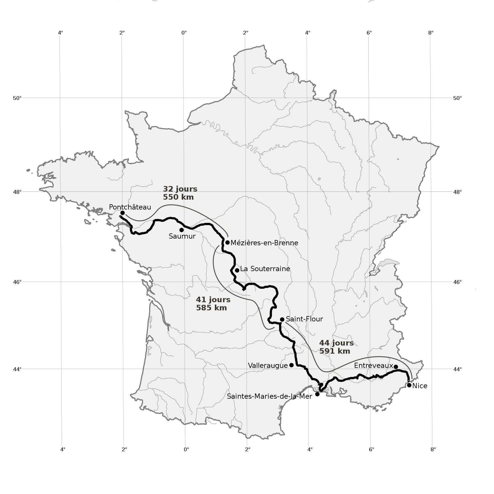

Avant-propos[A]
Cet ouvrage est publié sous une « licence libre » :
la CC0 1.0 universel.
la CC0 1.0 universel.
Les licences libres sont définies comme des licences octroyant certaines libertés fondamentales aux utilisateurs, et s’opposent par définition aux licences propriétaires. En particulier, les licences libres défendent 4 libertés :
- La liberté d’utilisation (liberté 0) : le propriétaire de l’œuvre garantit la liberté d’utiliser son œuvre pour tous les usages ;
- La liberté de modification (liberté 1) : le propriétaire de l’œuvre octroie à l’utilisateur le droit de modifier son œuvre sans avoir à demander une autorisation ;
- La liberté de redistribution (liberté 2) : l’utilisateur a le droit de copier l’œuvre autant qu’il le souhaite et de redistribuer cette œuvre à qui il voudra ;
- La liberté de publication (liberté 3) : enfin le propriétaire de l’œuvre octroie à l’utilisateur le droit d’améliorer l’œuvre et de redistribuer cette œuvre modifiée.
La licence CC0 offre toutes ces libertés et davantage encore. En effet, elle fait « tomber » l’œuvre dans le domaine public, autant que le permet le droit du pays concerné.
Les licences libres sont issues d’un mouvement social, celui du « logiciel libre », né en réaction à un processus de verrouillage de l’informatique. Apparues à l’origine pour protéger des logiciels, les licences libres se sont ensuite étendues à tout type de création sur le même modèle : l’idée fondamentale, philosophique, d’ouvrir totalement son œuvre afin de travailler en toute transparence, dans un esprit de confiance, de partage et de pérennité.
Libre à vous, alors, de partager, diffuser, revendre, adapter, réécrire, traduire... cet ouvrage.
Pour de plus amples informations : allez donc consulter le site web vvlibri.org ou lire, en annexe, la traduction (non officielle) de la licence CC0 1.0 universel.
[A]
Cet avant-propos est librement inspiré du texte « Qu’est-ce qu’une licence libre ? », publié sur le site web vvlibri.org
À Francis, avec toute notre amitié
À Monique, avec nos plus sincères remerciements
Introduction
Voici voilà le tout premier texte d’un livre de voyage, mi-carnet mi-récit, écrit presque deux ans après sa fin. Un court texte qui introduit les souvenirs – ci factuels et précis, là vaporeux et lointains, ci cocasses et légers, là intellos et militants – d’un premier voyage au long cours, réalisé en 2011, d’avril à octobre. Le nôtre. Celui de Mathieu et Marie, un vieux couple de jeunes (26 et 25 ans) qui s’aiment, se suivent et se cherchent dans le monde depuis neuf ans.
Cet ouvrage, tout comme le fut ce premier grand périple, est un essai, un entretien d’embauche au poste d’écrivain-voyageur. Il est à la fois foutraque et poétique, mordant et naïf, réaliste et impressionniste.
Suivant une ligne spatiale et temporelle parfois décousue, vous y trouverez 35 textes « autonomes ». La plupart sont des billets de blog écrits en voyage, à quatre mains, postés sur notre site web anarchos-semitas.net et peu retouchés par la suite. Ils sont dispatchés en trois parties.
La première c’est « Descente de Loire », ou comment descendre le plus long fleuve de France, de la source à l’estuaire, à pied et en kayak, pendant 2 mois et 1000 kilomètres.
La seconde c’est « Grande marche », ou pourquoi marcher et improviser d’un bout à l’autre de la France, de Nantes à Nice, pour 4 mois et 1700 kilomètres.
La troisième et dernière c’est « Au-delà du voyage », c’est le bilan, l’intemporelle, l’après et l’ailleurs.
Vous y trouverez également : en milieu d’ouvrage, un cahier de photos ; en annexe, le carnet de route de notre « descente de Loire ».
Nous n’en disons pas plus et vous souhaitons bonne lecture.
Marie et Mathieu
Partie I. Descente de Loire
Traversée de l’Ardèche
Récit d’Aubenas à Retournac ; 2 au 13 avril ; 120 km
Sur le pas d’une porte, une maman qui pleure dans vos bras. Et sur le quai d’une gare, une maman qui vous embrasse tout son soûl. Voilà comment débute un long voyage.
De Nantes à Aubenas, il y a 850 kilomètres de rails et d’asphalte, parcourus en 9 heures un dimanche. De Aubenas à Nantes, il y aura 950 kilomètres de marche et de coups de pagaies, parcourus en près de 8 semaines. À Aubenas, cela débute ce même dimanche – 3 avril – à la sortie d’un bus. Nous attendent alors 150 bons kilomètres de chemins terreux à travers l’Ardèche, destination Retournac où stationne notre kayak, en passant par le mont Gerbier-de-Jonc, la source du beau fleuve Loire, culminant à 1550 mètres d’altitude.
Les premiers pas sont difficiles et notre inexpérience flagrante. Ah ! nous en avions fait des nuits à la belle étoile, des périples en kayak, des bivouacs en veux-tu en voilà, des randonnées en montagne... Mais là, nous ne sommes que deux baudets boiteux civilisés qui traînons des sacs beaucoup trop lourds. Sur le papier, tout paraissait utile. Nous aurions pourtant dû nous demander : « Qu’est-ce qui est essentiel ? », et bazarder le reste. Finalement, nous nous coltinons – durant une semaine et 120 kilomètres – des sacs de, respectivement, 14 kilos pour Marie et 22 pour moi. Ça se porte, ça s’endure, mais ça n’est pas malin, puisque cette lourdeur provoque des maux bien réels (et dangereux) : fragilisation accrue des chevilles, des genoux et du dos. Au bout de 4 jours, pourtant, nos corps et nos muscles s’y habituent, ne nous rappelant à l’ordre qu’après 2 bonnes heures de marche ou une bonne monté ardéchoise.
Il nous aura fallu ces 4 jours – de rodage et d’apprentissage – pour arriver au mont Gerbier-de-Jonc, le jeudi 7 avril. De Aubenas jusqu’à cette fameuse source, nous n’avons emprunté que (ou presque) des chemins de randonnée (GR, GRP, PR et compagnie), à travers des paysages et panoramas plus que fameux. Malgré les premières douleurs, le froid des nuits en altitude, l’organisation et les habitudes à mettre en branle, le bouleversement induit par ce long voyage..., ces jours auront été un vrai plaisir. Comme léger résumé, imaginez : des champs blancs d’amandiers en fleur ; des chemins poussiéreux dans la pinède ; des longs sentiers romains pavés ; des couchés de soleil sur des panoramas de montagne ; de tous petits villages (dignes d’un JT de Jean-Pierre Pernaut). Tels furent donc les premiers jours ; puis vinrent les 4 suivants.
Ces suivants là ont été notre « descente »[B] : de la source – le « Gerbier » – jusqu’au Puy-en-Velay. Les paysages y sont restés semblables et toujours beaux (grandes forêts, petits villages, sucs ardéchois, pâturages, rivières en devenir), et nos pensées ont allègrement continué à divaguer. Une blessure au genou gauche de Marie s’est également affirmée, la faisant grimacer et souffrir, diminuant ses réjouissances et remodelant la semaine à venir. Le matin d’un beau lundi d’avril, préférant la sécurité à un masochisme certain, elle décida de boucler les 25 kilomètres nous séparant du Puy-en-Velay de manière motorisée (en taxi : Aïe ! pour le budget). Je finissais alors seul – par 6 heures de marche en plus, et 25 kilomètres au total – cette étape qui aurait dû en être deux, m’autorisant cependant 6 kilomètres de « stop », emmené par un berger itinérant en camionnette aménagée. Cool !
Cette blessure a été certes désagréable, mais très formatrice. Elle nous a appris à écouter nos corps et bien les traiter, à se soutenir et se comprendre mutuellement, à ne plus y voir un échec au voyage mais un nouvel ingrédient. Également, un tel périple doit être, selon nous, une aventure humaine plutôt que physique. Nous tâcherons, alors, de faire fi des remarques d’ordre compétitif de tout un chacun (y compris de nous même). Seul regret : que Marie ait manqué les magnifiques gorges de la Loire. Mais ce n’est que partie remise...
Cette première semaine de traversée ardéchoise aura été un petit voyage en soi : nous remplissant les yeux et la tête ; nous fatiguant et nous endurcissant le corps ; nous apprenant la marche au long cours et le voyage en autonomie. Mais il y a encore du boulot. Chouette ! Elle fut d’excellentes prémices, à travers une Ardèche qui vaut – je vous l’assure – ses larges coups d’yeux. Allez-y ! Nous, nous y retournerons. Pour finir, nous retiendrons une belle solitude à parcourir l’Ardèche et de froids levers réchauffés : par un bon café, un grand paysage, quelques chouettes paroles échangées et un bonnet sur la goule.
Laissant cette blessure au loin, nous rallions Retournac en train, le mercredi 13 avril, et rangeons nos godillots au fond du kayak, prêts à pagayer.
[B]
Notez bien les guillemets ! Hein ? Parce que ça descend et ça remonte aussi sec, sans cesse, foutredieu !
Vivre dans ce coin d’Ardèche
7 avril ; Marie
En parcourant les sucs ardéchois, autour du mont Gerbier-de-Jonc, nous avons croisé beaucoup de belles maisons – souvent de vieilles fermes – aux volets tous clos, qui ne semblaient pourtant pas abandonnées. Ce sont des demeures secondaires où la vie règne, au mieux, 4 mois par an, à la belle saison. Et oui, les « bons gens des villes » veulent leur petit coin de paradis, mais seulement pour l’été. Car l’hiver est, paraît-il, très rude ici ; il dure environ 6 mois. Ils ne pourraient s’y acclimater...
Cette dynamique touristique contribue largement à l’augmentation du prix du foncier (fermes et terres associées), qui devient alors exorbitant. L’agriculture (élevage, châtaignes, amandes...) reste, pourtant, une activité importante que des passionnés font difficilement perdurer. Mais, pour les jeunes exploitants, qu’il est difficile de s’installer ici ! Si bien que, faute de paysans locaux, les pâturages ardéchois sont piétinés par les vaches des départements voisins.
Le mont Gerbier-de-Jonc
7 avril ; Marie
« La Loire prend sa source au mont Gerbier-de-Jonc », phrase typique des écoles de nos grands-parents, de nos parents et, peut-être, de nous aussi. La source de la Loire, il y en a trois officielles. Mais en réalité, des suintements et des ruisseaux coulent de tous les sucs alentours, se rejoignant pour former une toute petite Loire.
Nous y sommes allés à ce fameux mont. Et qu’avons-nous trouvé ? Des touristes et leur camping-car tout neuf, faisant un détour, pour voir ce tas de cailloux. Le lieu m’a laissé un arrière goût touristique en bouche, m’enlevant la symbolique du moment. Pourtant, n’étant qu’en avril, il n’y avait pas « grand monde ». Mais l’été, d’après un cycliste habitué, le défilé ininterrompu des touristes s’étale de 10 h à 19 h. L’accès au sommet est payant (1 € environ) et de nombreux stands, de produits régionaux ou de souvenirs, envahissent un bitume assez large pour accueillir d’innombrables bus.
Je n’ai pas grimpé le « Gerbier ». Et même si je n’y retournerais probablement jamais, c’est sans regret !
Baptême ligérien
Récit de Retournac à Digoin ; 13 au 27 avril ; 220 km
Mercredi 13 avril 2011
Premiers coups de pagaies ; premières sensations. Et second départ qui devrait nous mener de Retournac à Lavau-sur-Loire, petite ville de l’estuaire ligérien. Nous kayakerons pour 900 kilomètres, bob sur la tête et manches retroussées. Bon vent et bonne vague !
Premiers coups de pagaies ; premières sensations. Et second départ qui devrait nous mener de Retournac à Lavau-sur-Loire, petite ville de l’estuaire ligérien. Nous kayakerons pour 900 kilomètres, bob sur la tête et manches retroussées. Bon vent et bonne vague !
Mercredi 27 avril 2011
Deux semaines déjà. À pagayer, sans surprise. Mais beaucoup aussi à pousser, tirer, lever, rouler ; les pieds dans l’eau trop souvent, le cul mouillé parfois. Et nous galérons, maudissant cette Loire. En ce début d’année, mes amis : pas de neige, pas de pluie. Alors, pas d’eau non plus. Et une Loire tristement basse, comme en un sec été. Ça commence mal, pour nous qui nous attendions à une Loire plus haute, plus fleuve.
Deux semaines déjà. À pagayer, sans surprise. Mais beaucoup aussi à pousser, tirer, lever, rouler ; les pieds dans l’eau trop souvent, le cul mouillé parfois. Et nous galérons, maudissant cette Loire. En ce début d’année, mes amis : pas de neige, pas de pluie. Alors, pas d’eau non plus. Et une Loire tristement basse, comme en un sec été. Ça commence mal, pour nous qui nous attendions à une Loire plus haute, plus fleuve.
Avant d’aller plus loin, laissez-moi vous préciser...
Nous et notre barda naviguons sur un kayak pliant, de manufacture polonaise (un « Amazon II Expedition » du constructeur Wayland). « Qu’est-ce qu’un kayak pliant ? » me demanderez-vous. Un kayak est une embarcation à propulsion humaine, assez plate, dans laquelle on se tient à fleur d’eau et que l’on manie généralement à la pagaie double. Le concept du kayak pliant est allemand et est apparu durant « l’entre-deux guerres », avec les embarcations de la marque Keppler. Une telle embarcation est constituée d’une armature démontable (originellement et souvent, en bois costaud et imputrescible ; mais aussi en aluminium, plus léger) et d’une enveloppe dont le fond est – évidemment – en matière très résistante (PVC, Hypalon...). Il peut être agrémenté d’un tas d’accessoires, souvent utiles : boudins d’air comme réserves de flottabilité, poignées de portage, renforts sur le fond de l’enveloppe, ligne de vie, divers poches, etc.
Nous et notre barda naviguons sur un kayak pliant, de manufacture polonaise (un « Amazon II Expedition » du constructeur Wayland). « Qu’est-ce qu’un kayak pliant ? » me demanderez-vous. Un kayak est une embarcation à propulsion humaine, assez plate, dans laquelle on se tient à fleur d’eau et que l’on manie généralement à la pagaie double. Le concept du kayak pliant est allemand et est apparu durant « l’entre-deux guerres », avec les embarcations de la marque Keppler. Une telle embarcation est constituée d’une armature démontable (originellement et souvent, en bois costaud et imputrescible ; mais aussi en aluminium, plus léger) et d’une enveloppe dont le fond est – évidemment – en matière très résistante (PVC, Hypalon...). Il peut être agrémenté d’un tas d’accessoires, souvent utiles : boudins d’air comme réserves de flottabilité, poignées de portage, renforts sur le fond de l’enveloppe, ligne de vie, divers poches, etc.
Le nôtre, de kayak pliant, est taillé pour l’expédition, pèse 38 kilos à jeun et est joli comme un cœur. Il est accompagné d’un indispensable chariot de portage, aidant nos bras et nos jambes à passer des structures non franchissables par navigation (barrages, hauts fonds et diverses structures humaines). Son petit nom est Louizanne, contraction de Louisette et Suzanne, blases de feu nos solides grand-mères. Comme elles, notre Louizanne a du caractère et semble solide comme un roc. Comme elles aussi, il a pourtant ses faiblesses et une certaine fragilité, le rendant largement vulnérable à certains environnements. Cette dernière précision est fondamentale ; elle est la raison des plus grands de nos stress et préoccupations. La voilà faite, nous pouvons alors poursuivre.
Nous partîmes par un bel après-midi, la fleur en bout de pagaie, prêts à en découdre. Et nous nous arrêtâmes, trois heures et à peine cinq kilomètres plus tard, les têtes vidées du trop plein d’attention mobilisée. Première journée qui fût notre « premier feu ». En trois heures, nous eûmes une jolie « totale » (deux portages délicats, des remous plus que sérieux et des rochers peu fréquentables) qui nous apprit, à marche forcée, la navigation en eaux vives. Jusqu’alors totalement dévouées à notre coque de bois, nos têtes purent enfin – après s’être réchauffées sous un chaud bonnet – se laisser aller à la lassitude, contemplant quelques milans noirs nous toisant de bien haut.
Telle fut la première journée d’une navigation qui devait en compter, encore, une cinquantaine. Puis vinrent les deux suivantes : égales. L’attention étirée, de bout en bout de la journée, à son maximum : apprendre à lire les remous ; repérer les rochers dangereux ; la pagaie à gauche, à droite, en avant, en arrière ; sauter les deux pieds dans l’eau caillouteuse, poussant et tirant le kayak, gueulant parfois ; pour enfin constater les dégâts, barres en bois fracassées et entailles dans sa peau. Que la journée s’arrête ! Ouf, mais transis de froid. En trois jours, nous aurons pagayé 13 heures et parcouru 35 kilomètres, de Retournac à Aurec-sur-Loire. Cela semble peu ; mais nous savons, nous, que ça n’est pas si mal. Relativisons cette torture, tout de même. Car nous y aurons pris, dans ces gorges de Haute-Loire, notre pied ! La navigation était sportive et chouette ; les paysages sauvages et magnifiques ; et la faune commençait à se montrer à nous.
Les jours suivants continuèrent largement notre formation d’aventuriers et balayèrent amplement deux croyances : une populaire et une personnelle.
La populaire est celle qui fait dire et écrire que la Loire serait le dernier fleuve sauvage d’Europe. Sauf de discuter interminablement sur le sens du mot « sauvage », ce voyage a (à de nombreuses reprises et sous des angles de vues divers) balayé de nos têtes cette croyance. Certes, la Loire est un fleuve magnifique à bien des égards. Et en bien des endroits, elle y paraît sauvage et on s’y sent allègrement solitaire.
Mais face à deux gigantesques barrages, véritables murs de bétons : qui, en quelques pas, transforment un « fleuve lac » en une « rivière rikiki » ; qui créent de belles zones de plaisances humaines ; qui modulent une navigation à coups de lâchés d’eau...
Mais lorsqu’à chaque instant, en chaque endroit (même les plus reculés), la présence humaine se fait sentir, de manières utiles parfois et souvent nauséabondes, modelant le fleuve et ses rives : les nombreux ponts et les blocs en vrac à leurs pieds ; les chemins de fer discrets ; les routes petites et calmes ou grandes et bruyantes ; les fils électriques et leurs pylônes, passant d’un bout à l’autre de tout panorama ; les jolis villages, anciens ou plus neufs ; quelques châteaux posés de manière ahurissante, pour raisons stratégiques ; de trop nombreuses maisons plantées au beau milieu d’un magnifique n’importe où, qui n’ont rien à y foutre ; et puis, invariablement, les déchets de l’homme !
Mais non ! La Loire n’est pas un fleuve sauvage. Elle est le serf et la poubelle de l’humain.
La croyance individuelle, que ce périple a largement lessivée, est la suivante. De la Loire, nous ne connaissions que l’estuaire et l’embouchure, près desquels nous avons fait pousser nos vingt premières années. Tout au plus, nous l’avions aperçue en quelques autres endroits – de villes ou de châteaux – où elle était, probablement, déjà bien large. Bien entendu, nous avions préparé ce voyage et savions, tout de même, dans quelle bassine d’eau nous mettions les pieds. Nous pensions, pourtant et naïvement, n’avoir que trois jours de Loire sportive, puis qu’elle deviendrait paisiblement navigable, ne nous réveillant que pour quelques difficultés très ponctuelles. Et à chaque passage délicat, nous nous disions que « courage, bientôt nous aurions la Loire navigable, la vraie Loire », négligeant souvent ces passages.
Mais elle s’est montrée à nous, franche. Et force a été de la découvrir – après quelques jours – le cul dans l’eau, une main agrippée à un kayak sévèrement endommagé, prenant pleinement conscience que, oui, c’était aussi cette Loire là que nous étions venus chercher. Nous nous sommes détendus, nous avons porté une plus forte et une plus sereine attention à notre embarcation. Et alors, doucement, nous avons pris avec plaisir tous les emmerdes que la Loire nous apportait sur son lit scintillant : embâcles de rochers ou d’arbres, petits à gros, et leurs remous, gros à petits ; nombreuses et larges gravières et sablières ; tapis de renoncules envahissantes ; et nombreux déchets humains.
Autant ne pas vous dire que ces quinze jours auront été remplis, à en déborder : de stress, de fatigue, d’émotions, de tranquillité, de sport, de paysages, de couchés de soleil, de sueurs chaudes et froides, d’emmerdes, et puis tout le reste.
Tout le reste, il faut aussi en parler et l’écrire. Ce sont les longues journées à tirer un kayak, dans les cinq centimètres d’eau du plus long fleuve de France ! C’est l’unique orage, le seul jour de pluie, d’un mois de baroud d’avril. C’est la multitude de piafs majestueux que nous avons observés et écoutés, avec un énorme plaisir. C’est la flore, aussi, que nous avons étudiée, avec un sérieux scientifique.
Les premiers quinze jours de navigation sont terminés, aboutissant, après le passage du barrage de Villerest le samedi 23 avril, puis de la ville de Roanne le lendemain, à des étendues infinies, sableuses et arborées, où paissent paisiblement les fameuses et goûtues vaches charolaises. Nous voilà à Digoin, pour un repos et un décrassage bien mérités. Maintenant, la suite.
Deux mondes
16 avril ; Marie
Cela fait deux semaines que nous bivouaquons ; nous dormons sous une tente ; et nos repas sont certes équilibrés, mais manquent de diversité. Toutefois, nous nous sentons bien à vivre dans ce petit confort, nous y sommes à notre aise et y prenons du plaisir.
Ce midi, un homme généreux, rencontré le matin même, nous a invités au restaurant ; un chic, où les petits plats sont mis dans les grands. Le contraste, entre ce repas et nos vies de voyageurs, a été fort. Passer de la platée de riz avec saucisson, à la farandole de hors-d’œuvres, paraît hallucinant ! Nos tenues, aussi, étaient surprenantes dans un tel établissement, où les serveurs et serveuses sont vêtus d’ensembles noirs et blancs immaculés. Je me suis régalée, mais ne me suis pas sentie à l’aise. Pour moi, le repas est un moment convivial qui se transforme, ici, en une cérémonie protocolaire : seul le « chef de table » a les prix ; le pain est servi au compte goutte ; les noms des plats et les manières des serveurs sont alambiqués...
Depuis le début de ce voyage, je m’ouvre davantage aux sensations : mon corps qui travaille, la faim, la soif... Tout est exacerbé, bonheurs comme malheurs. Que je me se sens vivante ! Mais, lors de ce repas, j’ai cru assister à une comédie ; les gens jouaient des rôles. Après tout, cette comédie est souvent quotidienne : au travail, entre amis, en famille, etc. Et nous dévoilons rarement notre nature profonde. La société que nous construisons se veut, elle aussi, protocolaire et impersonnelle.
Qu’il est dommage, alors, de devoir partir en pleine nature pour retrouver ce naturel perdu.
Contrastes de Loire
Récit de Digoin à Amboise ; 27 avril au 12 mai ; 390 km
Digoin et son pont-canal sont derrière nous, depuis trois bons jours. Hier, c’est la ville de Decize que nous avons passée – après une pression fraîche et un petit portage très chiant – en compagnie d’Olivier, un kayakiste en vacances, descendant la Loire jusqu’à Orléans. Nous nous sommes suivis : nous, lourds comme un sac à patates, le kayak bourré de victuailles, zigzaguant péniblement ; lui, léger sur son blanc esquif [C], filant droit, face à un soleil couchant luisant vif sur la Loire. Collant nos tentes pour un bivouac commun sur une haute falaise sableuse, nous avons papoté de nos projets, nos impressions, nos expériences...
Aujourd’hui, en ce dimanche premier mai, le voilà parti de bonne heure, sans bruit faisant. Le reverrons-nous ? Un peu trop fidèles à nous-mêmes, nous nous réveillons encore tard, occupant cette fête du travail à notre manière : lecture, écriture, photographie, méditation et câlins. Ne nous attendent, aujourd’hui, que 30 kilomètres : nous pouvons tout nous permettre.
Jeudi 5 mai, réveil un peu frais, mais pas trop. Effectivement, il est neuf heures. L’astre jaune ne nous a pas attendus pour se lever, réchauffant les cœurs et le paysage. Cela fait 33 jours – docteur – que nous petit-déjeunons sous un soleil déjà bien haut. Aucune aurore dans nos têtes ; cela commence à être problématique pour le moral : impression d’être deux bons à rien, gâchant le temps. Mais ne nous lamentons pas. Le ciel est clair ; le mois passé a été une merveille ; ceux à venir s’annoncent égaux. Marie bouquine, moi j’écris, à quelques pas en amont de notre première centrale nucléaire, celle de Belleville. Nous la passerons dans l’après-midi – tranquillement – savourant cette journée de repos. Puis dimanche, Orléans la pucelle pointera les faubourgs de son nez.
Le temps file ; le trait sur la carte avance bien, mine de rien. À notre quinzième jour de navigation, nous avions vu défiler – au total – 185 kilomètres de Loire. Les 185 suivants ont été avalés, eux, en une petite semaine. Période d’essai terminée, rendements doublés ! Logique, non ? Très logique. Car cette « période d’essai » (10 jours de marche et 2 semaines de kayak) nous a mis à rude épreuve : sportivement, mentalement et logistiquement. Par ses difficultés, elle a été probablement la plus propice à l’abandon. Nous l’avons passée ; non sans mal !
Entre hier et aujourd’hui, les situations sont bien différentes... ou presque.
Nous peinions à porter deux lourds sacs à dos et trop « d’inutiles ». Aujourd’hui, notre solide kayak porte pour nous toutes ces mêmes affaires, qui ont finalement trouvé leur pleine utilité. Seuls hics : quelques barrages, seuils, ponts, que nous devons franchir en portant notre « âne porteur » et ses bagages.
Nous avions, durant de longues journées, les têtes exclusivement dédiées aux remous, aux rochers et à la fatigue. Aujourd’hui, au fil d’une eau calme et de longs silences, nous laissons nos esprits divaguer à la rêverie, à la contemplation. Seul hic : « Ouch ! Et merde, un banc de sable ! »
Nous étions cocasses à mugir et à piétiner dans cinq centimètres d’eau, tirant notre kayak sur de grandes plaques rocheuses verdâtres et parcourant, en trois heures, quatre kilomètres et demi. Aujourd’hui, en trois mêmes heures, nous avalons une vingtaine de kilomètres et plus. Et cette fois-ci, pas de hic.
Nous filons, désormais, à coups de pagaies lents et puissants, au travers de paysages bien différents de ceux des gorges de la Loire, nous laissant aller à la poésie...
Trois fois « glou », à travers buses et vieille plomberie, la rivière Loire prend source au mont Gerbier-de-Jonc, banal tas de cailloux.
En Ardèche, les montagnes suintent et les rivières naissent.
En Ardèche, les montagnes suintent et les rivières naissent.
La voilà qu’elle cavale, entre les rochers et à travers champs, vite rejointe par son premier affluent, l’Aigue-Nègre. Elle grossit, la Loire, au rythme de ces suintements. Elle grossit et elle file, pas toujours douce avec les hommes et les kayakistes. Elle se creuse un chemin à travers des gorges, qu’elle creuse à son tour. Joli ballet.
Dévale, dévale, Loire...
Passe le Puy-en-Velay, prends tes chemins et descends les contreforts de ce Massif central.
Passe, Loire, avec dédain, ces maudits barrages dont les hommes t’ont déguisée.
Passe Roanne et nourris son fade canal.
Passe le Puy-en-Velay, prends tes chemins et descends les contreforts de ce Massif central.
Passe, Loire, avec dédain, ces maudits barrages dont les hommes t’ont déguisée.
Passe Roanne et nourris son fade canal.
Enfin, repose-toi, Loire, sur ces immensités de sable et de cailloux fins. Et va à la rêverie, chatouillée par mille oiseaux.
Tous les contrastes de la Loire se trouvent là, en fin de compte : des hauteurs aux plaines, des gorges aux champs de sable, du bouillonnement à la sérénité, de la rivière au fleuve. Avec quelques constantes cependant : le héron cendré, le canard colvert et une anthropisation débordante.
Poésie à part, voici notre Loire. De Roanne à Digoin, on finit de descendre le Massif central par le nord, et on s’extasie à la vue de superbes et nombreux oiseaux. Les paysages sont grands et respirent. Ils sont faits de longues masses d’arbres et de plages d’un jaune très clair. La Loire est basse et nos pieds souvent dans le sable. On en vient presque à y croire, oui, que ce fleuve est sauvage. Après Digoin et jusqu’à Blois, les panoramas s’étriquent un peu, mais restent largement ouverts. La présence humaine se fait plus dense. Villes, champs, ponts, routes... fleurissent et étouffent la Loire, autant que la renoncule des rivières, plante envahissante, au parfum néanmoins doux et agréable. Ces villes ont un beau patrimoine et méritent – tout de même – de larges détours, pour ceux qui aiment l’histoire et les bistrots.
Et nous ? Après Roanne, nous nous sommes apaisés, s’essayant à être un peu hippies. Nous mangeons avec appétit ce voyage, nous nourrissant de tout ce qu’il dégage. Mais nous buvons peu, il ne pleut pas. Et faute de nuages, nous bronzons. Pour deux blancs bretons, c’est cocasse et à la longue à peine douloureux. Surtout, nous jouissons, avec un subtil plaisir, de l’alternance suivante. Souvent plongés en profonde nature, nous méditons sur la paix, l’amour, le voyage et contre les hommes. Mais, parfois, nous accostons au creux de cette même humanité, qui nous accueille, chaleureuse. Alors, nous nous gorgeons de rencontres, de paroles échangées, de cafés bus à la terrasse d’un troquet, et de BD lues dans une bibliothèque. Nous aimons cette contradiction ; elle nous fait sourire et avancer ; et voguant à ses côtés, nous la comprenons.
À dix kilomètres avant Amboise, sur une plage de sable fin, entre un pêcheur taquinant le goujon et un castor rongeant les branches, nous voilà assis, au repos, méditant, encore. Nous sommes le 12 mai, un jeudi. Demain, vendredi 13 : rien à espérer, nous sommes heureux et maîtres de nos destins.
[C]
Un très joli et sobre kayak de mer, construit de ses mains, il y a 15 ans de ça !
Filent l’eau, le sable, la vie
3 mai ; Marie
Un mois que nous sommes à bourlinguer, à suivre le cours de ce beau fleuve Loire. Que nous en avons eu des remous et bancs de sable, nous ralentissant excessivement ! Nous voilà, maintenant, sur une partie aisément navigable, à l’exception de quelques passages délicats. Et nous filons.
Je regarde, sur la carte, le trait du chemin parcouru et deux sentiments s’affrontent en moi. Le premier est la volonté d’avancer : pour voir ce trait grandir encore ; découvrir ces villes au nom familier, puisque longuement étudiées pendant la préparation ; enfin, arriver dans notre région et nous dire « On l’a fait ! » Le second sentiment est l’envie de lenteur ; comme si, au fur et à mesure que ce trait grandissait, le voyage s’enfuyait.
L’aventure « Loire » se terminera dans un mois, s’ouvrant sur une autre. Aurai-je assez profité de ces journées à pagayer ? Me serai-je assez ouverte aux milieux qui m’entourent ? J’essaie, au maximum, de ne rien gâcher de ce périple. Mais, en rentrant, j’aurai l’inévitable sensation d’en avoir manqué un bout.
Dans une vie sédentaire, comme dans une de voyage, prend-on suffisamment les moments, bons comme mauvais ? J’ai cette sensation latente que la vie, comme le sable, nous file toujours entre les doigts. Alors, carpe diem.
Le phoque et le pont
14 mai ; Mathieu
Tout ça, c’est une histoire de tracas, en fin de compte. Les tracas que nous causent les vieux ponts de Loire. Il y a eu ceux de Veauche, Digoin, Nevers, Orléans, Beaugency, Blois et Amboise. Leurs attraits : la beauté de leur vieillesse et, parfois, quelques chouettes remous sportifs. Leurs constantes de malheur : de grosses pierres pas commodes sous leurs piliers et leurs arches ; des bouts de bois et de ferrailles ; des plaques dentées métalliques ; etc. La plaie des kayakistes et canoéistes.
Hier, nous fûmes de nouveau face à l’un de ces vieux ponts. Le plus redouté, le plus sale, le plus dangereux probablement. Le pont Wilson de Tours. Nous le toisâmes longtemps, timidement, peureux des histoires que nous avions lues à son sujet. Le parcourant de long en large, nous y cherchâmes une issue : la moins crispante pour nous, la moins douloureuse pour notre embarcation. Nous avions convenu – tout de même – qu’en toute sérénité nous ferions un portage à cet endroit, à ce Wilson, trop dangereux pour notre coque de bois. Mais moi, mué par un vilain orgueil, j’imaginai la passer, cette terreur.
« Marie, dis-je, là-bas sous la quatrième arche, il y a des gros blocs, des gros remous, ça a l’air dur et sportif, mais ça passe ! Non ?
— Non, qu’elle trancha.
— Hum. D’accord. »
— Non, qu’elle trancha.
— Hum. D’accord. »
Finalement, la raison l’emporta. Au lieu de franchir cet emmerdement en 10 secondes et en prenant tous les risques, nous le franchîmes en 30 minutes de pleine sécurité ; moi, un peu piqué dans mon orgueil de « guerrier ». Ce genre de vieux pont est générateur de stress. Le Wilson nous stressa sacrément, le fumier !
Le pont passé, nous continuâmes notre chemin, cahin-caha, entre eaux et bancs de sable. Puis apparut – comme prévu sur notre carnet de route – un second vieux pont, doublé d’un autre (récent). À priori, pas d’ennui ici. Mais l’autre Wilson, là-bas, nous avait ramollis. Et nous voici, encore une fois, longeant un foutu pont sur toute sa longueur, cherchant une issue tranquille. Bof. Dans la mollesse d’esprit du moment, rien de convenable.
C’est alors qu’une famille de canards colverts passa sous une arche proche, nous montrant le chemin. Usant d’un vif esprit d’analyse, je dis : « Si la famille canard passe, on passe ! » Hardis, nous nous jetâmes dans le courant de l’arche à anatidés, pagayant fort. Les premiers remous arrivèrent. Les premières vagues s’engouffrèrent sous la jupe de notre kayak (les coquines). Pagayer, pagayer le cœur battant, à chaque fois dans ces obstacles. « Ça passe, que c’était bon ! »
À la sortie de l’arche, entre les deux ponts quasiment collés, l’embarcation freina et nos esprits se bloquèrent nets. À bâbord, à un mètre seulement, une tête sortait à demi de l’eau. Une tête grosse ; grise ; sans poil apparent, sauf trois petits sur le dessus du crâne, comme sur un dessin d’enfant ; une jolie moustache de chat ; et puis, fixés sur nous, deux très grands yeux noirs, presque tristes, implorants. Un phoque ? Oui, un phoque !
Aussi fou que cela paraisse, il y a bel et bien un(des) jeune(s) phoque(s) s’aventurant dans les terres, loin de l’estuaire. L’an passé, un de ces phoques « veau de mer » aurait été aperçu à la Charité-sur-Loire. Ça fait loin ! Cette année, il s’est montré à Bouchemaine, près d’Angers. Le voilà, une semaine plus tard, aux portes de Tours, sous nos yeux hagards
[D].
Le tête-à-tête dura dix secondes, un peu plus, un peu moins. Un premier petit mouvement de pagaie : la bête remua. Un second : elle passa sous l’eau. La voilà partie. Quel choc ! Nous restâmes alors hébétés de longues minutes, avançant à faibles coups de rames, nous retournant sans cesse, priant pour revoir cette merveille. Puis nous repartîmes, lentement. Mais alors, à cinquante mètres devant nous, la demi-tête émergea quelques secondes, comme un adieu. Et hop, la voilà repartie, plongeant dans les étincelles du soleil couchant.
[D]
Un grand merci à ma maman, Monique : pour ses recherches « internet » à distance ; et pour avoir découvert, dans Ouest-France, un article sur cette apparition. Sans cela, elle nous aurait pris pour deux fous ; et nous serions persuadés, alors, d’avoir vu une loutre.
Sable, digue, océan et plénitude
Récit d’Amboise à Lavau-sur-Loire ; 12 au 28 mai ; 250 km
Bien le bonjour, chères lectrices et chers lecteurs. Quel jour est-il, allez-vous bien et fait-il beau ? En attendant vos réponses et vos nouvelles, que nous apportera le doux vent de ce printemps ligérien, apprêtez-vous à recevoir les nôtres, de nouvelles. Je vous écris un vendredi – celui du 20 mai – l’oreille tendue, écoutant le bourdonnement d’un train. Que la ligne Angers-Nantes est passante ; nos bivouacs et nos siestes en sont témoins. M’enfin, ces bruits de métaux se frottant à vive allure sont plutôt paisibles, agréables, familiers ; tout comme nos jours et nos nuits...
Où en étions-nous ? Quelqu’un qui suit ? Nous en étions tout juste à Amboise, et nous finissions le deuxième tiers de notre descente ligérienne. Avant plus de détails, sachez que le troisième tiers fût bon, à l’égal des deux autres, mais à sa manière. Le vendredi 13 mai – au lendemain duquel je vous ai laissés – fut un n-ième jour de repos. Nos godillots ont marqué la jolie ville touristique d’Amboise. Nos esprits et nos imaginations y ont exquisément vagabondé : au Clos Lucé, dernière demeure de feu le brillant Léonard de Vinci, et à la médiathèque, repère à journaux et à BD. Puis, les coups de pagaies se sont de nouveau déroulés ; nos bras forts et habitués s’en délassant.
Vu d’une carte ou vu du ciel : après Amboise, il y a Tours ; après Tours, Angers ; après Angers, Nantes ; et enfin, l’estuaire de Loire. Vu d’en dessous – à fleur d’eau, au ras des vaguelettes – c’est amplement plus subtil, bouillonnant, diversifié. Et ardu à écrire. Nous n’avons pas pu tout goûter, tout sentir, tout apprécier à sa juste valeur et nous émerveiller de tout. Faisant l’impasse sur les vignobles, les châteaux de Loire et toutes les villes traversées, nous ne pouvons vous offrir qu’un fade abrégé.
D’Amboise à Lavau-sur-Loire (notre point de chute), la règle mesure quelque 250 kilomètres qui défileront en 10 jours. Appréciez ces nombres ronds. 25 kilomètres par jour : tout paraît simple ou presque.
Ce qui l’est : méditer et rêvasser, chaque jour, au cœur d’une belle nature ; vivre à notre rythme, du lever au coucher ; apprécier le soleil, la pluie, les nuages, les paysages ; observer et tenter de connaître, de comprendre, nos « coloca-Terre » ; se marrer, Marie et moi, ensemble ; se baigner nus ; bivouaquer ; et faire les cons !
Ce qui est moins simple : régler notre agenda avec celui du monde civilisé, pour voir les copains, par-ci par-là ; s’aimer, parce que le voyage « à la dure » et l’amour sont deux arts difficiles en eux, et davantage combinés ; faire le feu par des matinées venteuses et humides ; lire finement le fleuve pour naviguer sur son eau de sécheresse ; être aux portes de l’océan, au milieu de l’estuaire, et composer avec ses marées, ses vagues, son vent, sa vase, ses navires, sa force !
Nous voilà désormais le 28 mai à Savenay, petite bourgade entre Nantes et Saint-Nazaire, où habitent mes chers parents. Encore une fois, je ne vous épargne pas, avec ce bond dans le temps et dans l’espace. Cela fait une semaine – déjà – que notre aventure ligérienne s’est terminée. Une semaine que nous nous reposons les muscles, les tendons, les nerfs et la tête. Car, à la fin des fins, tout dans nos corps a fini pas être grippé, crispé ; il nous fallait alors ce repos. Cette dernière ligne droite n’était pas propice à l’écriture. Maintenant reposé, laissez-moi reprendre notre aventure...
Nous avons passé Amboise le 13, Tours le 14 et Saumur le 16. Les 17 et 18, nous étions aux abords d’Angers. Et les 20 et 21, nous étions à Nantes et sa périphérie. Nous y avons rencontré, dans cette ultime portion de Loire, pour une heure, une après-midi ou une nuit, des amis et nos familles – certains pas vus depuis des années. Nos incursions, dans cette humanité connue, ont été franchement plaisantes. Mais les retours à la nature, à l’isolement humain, au vagabondage solitaire l’ont été davantage, et plus précieux, et plus puissants. Donc et sans surprise, nous avons continué, après Amboise et jusqu’à Nantes, nos « extravagances » : baignades nues, bivouacs enfumés, contemplations et réflexions.
Jusqu’à Nantes, les paysages ne se sont pas bouleversés et étaient formés – toujours – des mêmes briques élémentaires : les plages de sable, les arbres bordant le fleuve, peu de remous, un niveau d’eau bas, un ciel très bleu un jour, très nuageux l’autre, mi-figue mi-raisin le troisième. Des merveilles à contempler du lever au coucher. Malgré tout, quelques changements notables sont apparus.
À partir d’Amboise ou Tours, doucement, la Loire s’est endiguée et a grossi en méandres, devenant en certains endroits un véritable labyrinthe d’eau, de sable et de pierres. Notre fil d’Ariane était alors un chapelet de bouées – rouges et vertes – que nous suivions rigoureusement, pour ne pas nous perdre, ni nous ensabler. Ces méandres, ce labyrinthe et ces digues forment des paysages si tranquilles et si beaux. Ils sont en France, à notre porte. Et qui les connaît ? Qui les a vus, avant de s’envoler jusqu’en des contrées lointaines ?
Je m’égare. Revenons à notre Loire. À écrire vrai, la sécheresse de ce printemps 2011 a enlevé beaucoup de sa superbe à ce grand labyrinthe. Et bien souvent, de toutes les issues possibles, il n’en restait qu’une ou deux tout juste praticables pour embarcations plates. Cette sécheresse fut l’une des principales composantes de notre descente ligérienne. Elle nous a fait souffler, suer, grimacer, gémir, peiner, autant qu’elle a du vous toucher (pour peu que vous tentiez de planter des patates, sur un sol dur de France). Très certainement, si le phénomène se poursuit, nous en rediscuterons, car il titille notre curiosité. Et aussi, il nous inquiète.
Mais poursuivons. Doucement, au fil de l’eau et des jours, l’estuaire s’est fait ressentir, subtilement. Ce fut tout un mélange : d’abord le sable, les digues, les méandres, le fort vent d’ouest et avec lui, les ciels nuageux ; puis les bateaux de pêche ou à voile, et les oiseaux marins par centaines ; enfin – et avec une marée de plus en plus puissante – la vase, les roselières et quelques échasses blanches. Nous rêvions en pagayant et pagayions pour continuer le rêve. Marie pensait au passé de cette Loire et de ses hommes qui l’ont animée, par amour et pour l’argent. Elle reconstituait le siècle d’or des batelleries de Loire. Elle rêvait... Moi, fixant ce panorama, ses couleurs et ses odeurs, je m’égarais en des endroits semblables et aimés : les marais de l’estuaire de Loire. Et je rêvais...
Les jours filèrent encore ; puis le réveil sonna. Nos rêves s’éclipsèrent et Nantes – notre belle Nantes – apparut, nous ouvrant ses ponts et son île, et nous amenant en son sein, aidée par une marée complice. C’était le samedi 21 mai, la veille de notre « arrivée triomphale » dans la vase de l’estuaire.
J’essayerai de faire court et intense, autant que le fût cette arrivée. Le dimanche 22 mai – au bout de 49 jours durs et merveilleux – la fin de notre excursion s’éveilla. Il était 9 h 30. Ce dernier départ, d’une étape d’une vingtaine de kilomètres, se fit dans les meilleures conditions. La veille, nous fûmes chaleureusement accueillis par deux tantes, un papa, une maman, un casse-croûte, un éléphant mécanique [E], une petite géante et un grand mexicain [F] ! Tout ça ! Notre dernière nuit fut douillette, posée sur le moelleux d’un bon matelas. Et le petit déjeuner fut paisible, en l’hospice de sainte Christine et saint Benoît (tante et tonton). Autant vous dire que nous partîmes dans d’excellentes dispositions, prêts à en découdre et en finir, à fouetter les vagues et à pagayer, ohé ohé ! petits matelots.
Au Pellerin, il était 9 h 30 lorsque notre kayak – la robuste Louizanne – toucha l’eau salée vaseuse. 9 h 30, sous une épaisse nappe de nuages, lorsque nos muscles s’enflammèrent, mus par une transe joyeuse. Flap flap, nos bras s’agitèrent. Flap flap, l’embarcation fila cap à l’ouest, aspirée par les débuts timides de la marée descendante.
Un paysage bouleversant s’anima alors tous azimuts. Et sur nos joues glissait de l’eau salée : celle des vagues de l’estuaire et sûrement deux ou trois larmes de bonheur. Nous avions, cent et cent fois, parcouru les marais de Loire, contemplé les bords de mer et scruté leurs oiseaux. Nous connaissions les beautés de ces endroits ; nous nous en étions si souvent émus. Mais en ce jour (solennel à n’en pas douter) nous l’avons découvert, cet estuaire, comme deux enfants.
Le fleuve s’était amplement élargi, doublant ou triplant sa corpulence. Et les rives – extravagante composition de roseaux, de gravats et de prés humides – formaient deux haies d’honneur, comme pour nous accueillir. Alors, entre ces rives et au cœur de cette Loire large et agitée, trempés par un rideau d’une fine pluie, ballottés par les vagues et leurs creux d’un mètre parfois, dans une exaltation, une transe, une panique et une peur, nous jouîmes tout notre soûl de bonheur. Que la Loire fût belle alors ; et qu’elle fût dure.
Les vagues frappaient la proue de Louizanne, trempant allègrement Marie. Et le fort vent d’ouest s’opposait à nos puissants coups de pagaies. Mais, à force d’endurance, les flots défilèrent et le petit port de Lavau-sur-Loire s’approcha. Pourtant, la marée avait si bien baissé que nous ne trouvâmes pas tout de suite l’entrée du port, cachée qu’elle était par des amas de vase. Cet ultime bout de Loire s’éternisa alors, titillant nos nerfs et la patiente de nos familles.
Finalement, c’est au ras des roseaux et les jambes dans la vase que nous débarquâmes. Puis, après un dernier effort à tirer notre kayak dans un pré humide (aidés par le papa de Marie et ma maman), nous retrouvâmes nos familles autour d’un pique-nique en fête.
Ainsi se termina notre descente de Loire du printemps 2011.
[E]
À Nantes, « La compagnie des machines de l’île » fait s’animer de merveilleuses créatures mécaniques, dont l’éléphant.
[F]
Ce jour-là, la compagnie « Royal de Luxe » préparait, à l’abri des regards terrestres, son nouveau spectacle de rue, avec ses fameux géants.
Partie II. Grande marche

Cap à l’est !
Récit de l’entre-deux
puis de Pontchâteau à Mézières-en-Brenne
6 juin au 5 juillet ; 550 km
puis de Pontchâteau à Mézières-en-Brenne
6 juin au 5 juillet ; 550 km
Et voilà. Les pagaies sont posées, le kayak est plié et rangé au fond du grenier parental, nos corps et nos têtes se laissent aller à un peu de repos. Une aventure se termine ; une autre se prépare. Cet entre-deux dure deux semaines : une qui clôture un beau mois de mai ; une autre qui grappille le début juin, annonçant l’été à venir. Au programme : les premiers jours, du repos, parce que nos muscles sont crispés et nos esprits las ; les suivants, de la détente (en nature, en famille...) et du travail. Du travail surtout !
D’abord, nous « clôturons » notre descente de Loire, en nettoyant le matériel et les vêtements, puis en mettant de l’ordre dans nos papiers et écrits de voyage. Et, surtout, nous préparons notre prochain périple : une grande marche, direction le cap Finisterre (à la pointe nord-ouest de l’Espagne). Le gros boulot préparatoire de Marie (fin 2010 - début 2011) nous épargne bien du tracas : l’itinéraire est déjà très bien fait ; les quelques points administratifs et logistiques sont réglés. Mais que faire alors ? Une chose ! Une très grosse chose, qui nous est venue de notre marche en Ardèche et de notre rencontre avec « Olivier le kayakiste ». Faire faire un ultra régime à nos sacs. Leur liposucer un maximum de kilos, pour avoir une chance d’arriver au bout de notre aventure.
Rappelez-vous... Lors de la partie « rando » de notre descente ligérienne, Marie portait un sac de 14 kilos, tandis que le mien en pesait 22. Trop lourds, pas agréables et, avec les dénivelés ardéchois, dangereux pour nos articulations ! Nous nous étions alors promis, crachant dans nos mains, que « Non non non ! » il était « hors de question de repartir de cette lourde manière ». Olivier – comme un Jésus – nous présenta un état d’esprit allant dans ce sens : la MUL pour « Marche Ultra Légère »[G].
En voilà une religion qui nous convient : barouder léger ; en ayant une certaine autonomie et une plus grande mobilité ; en bricolant et bidouillant son matériel ; en identifiant ses besoins essentiels ; et en apprenant à se passer du reste (ou à trouver ce reste sur place, si besoin est). De quoi rendre nos pérégrinations encore plus libérées.
Après moult prises de tête, coups de ciseaux et délestages tous azimuts, et grâce à l’aide précieuse de notre couturière équipementière (Monique ma bonne mère) et d’une balance de cuisine, nous voici fin prêts au départ. Marie et sa protubérance dorsale perdent, dans la bataille, 6 kilos ; moi et la mienne, environ 8 [H] ! Peu de régimes minceur pourraient se targuer d’une telle efficacité. Malgré tout, de nettes améliorations seront à faire les prochaines fois.
Et maintenant, en route !
Un mois déjà. Un mois que nous avons troqué nos pagaies doubles contre deux paires de godillots. Un mois que nous avons chargé nos deux sacs sur nos deux dos, prenant une nouvelle fois la poudre d’escampette.
De Pontchâteau en Loire-Atlantique à Mézières-en-Brenne en Indre, ces godillots ont tapé la poussière et l’asphalte de 550 kilomètres de chemins, le temps de 1440 retournements de sablier, le long d’un itinéraire fiévreux inventé par une Marie folle.
Les premières foulées se sont faites au Calvaire de Pontchâteau, ont longé le Sillon de Bretagne, traversé les marais de Couëron, passé la Loire par un bac, puis rejoint le lac de Grand-Lieu. Allant par le vieux Clisson, elles sont remontées jusqu’à la Loire, à Saint-Florent-le-Vieil, récupérant le sentier de grande randonnée n°3. Longeant les vignes, les vallons et les moulins à vent d’Anjou, vers Saumur puis Montsoreau, elles sont passées en Touraine, traversant ses vastes forêts et ses plaines inondées de tournesols et de blé, ponctuées çà et là de cités médiévales. Ces milliers de foulées sont arrivées à Mézières-en-Brenne, au pied de deux mille étangs, rejointes par les pneus de deux mamans, pour trois petits jours de vacances bien méritées.
De bout en bout de cet itinéraire, et de proche en proche jusqu’en Brenne, la marche lente et le bivouac nous ont révélé quelques rouages d’une France champêtre. De plus, le bouillonnement et l’évolution de l’homme dans son vaste environnement, face au reste du « Vivant » et de la « Nature », ont fait émerger en nous mille questionnements, mille réflexions, mille critiques acerbes et mille espérances.
Ainsi, nous avons pu : admirer les hérons cendrés, pourprés et garde-bœufs en étangs et marais ; bougonner contre les élevages intensifs de poulets, de pommes et d’humains (dans leurs lotissements maussades) ; accompagner, à contre courant, la Loire et nombre de ses veines, nous y plongeant parfois ; nous étonner du nombre de demeures bourgeoises angevines, admirant quelques-unes majestueuses ; et subir les caprices d’une météo ci douce, là lourde, ci pluvieuse et là torride.
Nous avons pu aussi : découvrir un petit pays gris d’ardoise et une vaste contrée blanche de tuffeau ; envier la fraîcheur d’extravagantes caves et maisons troglodytes ; et nous émouvoir des regards de quelques biches, cerfs, chevreuils, sangliers et blaireaux. Enfin, nous avons entendu l’éveil d’un été aux grondements des moissonneuses-batteuses, coupant les blés à la faveur des fins de jours ; et avons calmé ses premières chaleurs à l’ombre de grandes forêts exploitées. Nous avons contemplé autant de couchers de soleil qu’il y eu de jours, quelques aurores aussi et quelques nuits étoilées.
Finissant de suivre l’est et les cœurs de tournesol, nous avons mis cap au sud, laissant cependant nos pensées flotter chaotiquement en toutes directions.
Ces pensées filent, voguant sur de vastes mers : celles du vagabondage, du voyage, de la découverte, de l’humain. Elles filent ; puis, sur quelques îlots solitaires, elles trouvent des trésors.
Des trésors, nos pas et nos coups de bâton en trouvent aussi : dans les plaines ou sur les coteaux, au bord des chemins, au fond des champs, au cœur des forêts, sur les rivières et les étangs, et dans le lointain des horizons. Un ciel aux nuages massifs époustouflants ; ou un autre, déchiré et chaleureux. Une rencontre sauvage inattendue ; ou une autre, humaine, simple et accueillante. Une senteur mouillée, fraîche, orageuse ou forestière, toujours envoûtante. Un fond sonore calme et délicat ; ou un autre, bouillonnant de nature et de vie. Et les rayons chauds du soleil d’un matin frais, éveillant un visage embué des fumées d’un café tiède. Et...
En avril et mai, nous avons réalisé la première partie de notre grande escapade de 2011 : la descente de la Loire en kayak. Cette épreuve fut un peu rude au début, mais facile et bucolique dans l’ensemble. Nous l’avons terminée dans la boue, les rires et la joie, le sourire collé aux oreilles et des paillettes d’or plein les yeux (ou était-ce du sable ?). Un voyage bienheureux quoi !
Puis, reposés, nous nous sommes lancés dans la seconde longueur, joyeux et soulagés de retrouver la route. Pourtant, dès notre départ et malgré les trésors dénichés ensuite, une morosité ténue flottait autour de nous, comme la brume d’un matin sur la Loire. Une morosité qui nous rendait ponctuellement malheureux, attisée par les duretés de la marche et du voyage : une chaleur écrasante, un temps triste et mouillé, une mauvaise rencontre, un endroit glauque, ou tout simplement une moins bonne journée. Cette foutue morosité, nous l’avons triturée dans bien des sens : pour connaître ses démons, les combattre, puis victorieux pouvoir repartir le cœur en paix. Amen !
Le premier démon qui se montra à nous – petit et éphémère – fut l’outil même de notre voyage : la marche. Cette marche est plus impliquante, pour le corps et l’esprit, que ne le furent mille coups de pagaie sur un kayak. Elle est plus viscérale ; implacable métronome de tous nos gestes, nos pensées, nos vies. Il fallut alors, pour nos têtes et nos membres, s’y régler.
Le second à apparaître – global et immuable – fut le genre humain dans toute sa bêtise, son avidité, sa domination, son orgueil. Ce démon-là semble omniprésent et se tient à de solides fondations. Nous avons pourtant convenu de ne jamais le laisser nous abattre mais, au contraire, d’en faire le combat militant d’une vie.
Le troisième et dernier démon s’avança en souriant, vêtu de très beaux apparats ; il avait pourtant quelques airs pourris. Ce démon-là n’était pas agressif ; au contraire, il se montrait accueillant. On l’appelait « Chemins de Saint-Jacques-de-Compostelle ».
Lorsqu’en 2010 nous choisîmes les « chemins de Saint-Jacques » comme aire de jeu pour nos déambulations libertaires, ce fut mû, assurément, par notre frilosité plutôt que par leurs attraits historiques, culturels et humains (même si ceux-ci sont indéniables). Timides et peureux, il nous fallait au moins la facilité de ces chemins ultra empruntés, pour partir, à deux.
Et voilà que le démon esquissait sa pourriture... « Compostelle », tout le monde semble l’avoir fait, connaître un tiers l’ayant fait ou encore rêver de le faire. Tout ce même monde va de son avis implacable et, pour situer les deux marcheurs au long cours que nous sommes, pète à la queue-leu-leu des questions à la thématique bornée : « Combien de kilomètres par jour ? Au total ? De temps pour le faire ? Quel poids font vos sacs ? Vous dormez en gîtes ? En camping ? Mais le chemin ne passe pas par là ? Et... ? Et... ? » Et merde !
La plupart des curiosités ne s’intéressent qu’au but et aux moyens formels d’y parvenir. Pas de place alors à la contemplation, la déambulation, la lenteur ; mais seulement à une compétitivité et une rentabilité bien de notre temps. « Qui sont ces marcheurs ? Quelles sont leurs motivations, leurs impressions ? » ne semblent pas être des interrogations pertinentes à leurs yeux, sauf pour quelques marginaux ou zigues à la spiritualité bien ancrée.
Durant ce mois, nous n’avons encore emprunté aucun « sentier jacquaire officiel ». Pourtant, nous sentons doucement se refermer leurs clôtures sur nos âmes. C’est tout de même un comble, pour deux apprentis libertaires !
[G]
Les adeptes de cet état d’esprit partent de quelques jours à plusieurs mois (à pied, en vélo, en kayak...), avec un barda complet, économique et surtout très léger. Pour en savoir plus : www.randonner-leger.org
[H]
Le sac de Marie (avec vivres + eau) = 8 kilos. Le mien (avec vivres + eau) = 15 kilos.
Rêveries à Grand-Lieu
10 juin ; Marie
En traçant notre itinéraire, je décidais d’un détour par le lac de Grand-Lieu. Ce lac, pourtant dans notre département originel, nous le connaissions peu. Réputé pour sa richesse ornithologique, il est, en hiver, le plus grand lac naturel de plaine de France. Nous avons pris trois jours pour en faire le demi-tour par le sud. De ce lac, nous n’avons vu que les abords : des marais et cultures, le rendant peu visible et peu accessible. Cela dit, nous ne regrettons pas la visite.
Nous nous sommes laissés balader par des marais farceurs, aux nombreux culs-de-sac. Mais quel plaisir de se rendre compte de l’erreur quand on y trouve de nombreux oiseaux, dont certains rarement observés, comme des guifettes moustacs. Quel plaisir, aussi, de s’installer pour une nuit, dans un champ rempli de joncs, avec une vue lointaine sur les marais, ses vaches et ses canaux. Quel plaisir, alors, de rester longuement assis, les jumelles vissées aux yeux, à la recherche de l’oiseau rare.
La patience est récompensée lorsque l’on voit : voler, au-dessus de sa tête, un élégant héron pourpré ; passer, en toute hâte, un martin-pêcheur trop pressé ; voler un groupe de spatules, reconnues au dernier moment ; ou des hérons garde-bœufs, restant sous les pattes protectrices de bovidés. On assiste également à des scènes communes, pourtant invariablement merveilleuses : un héron cendré qui s’envole ; une aigrette garzette en recherche de nourriture ; des mouettes en grandes colonies ; des vanneaux huppés chanteurs et voltigeurs. Et c’est, une fois de plus, en prenant un chemin de traverse que nous sommes tombés sur une insolite composition : onze cigognes blanches qui se reposaient sur un arbre mort.
Malheureusement, à Grand-Lieu se joue aussi une tragédie, dont les acteurs principaux sont l’homme et sa bêtise. S’y trouvent de nombreuses espèces invasives (c’est-à-dire : des espèces exotiques à un milieu, introduites par l’homme [I], qui deviennent nuisibles à ce milieu) : ibis sacré, ragondin, jussie, myriophylle du Brésil et écrevisse de Louisiane. Cette dernière espèce, introduite en France au milieu des années 70, est probablement la plus virulente. Les écrevisses sont pêchées puis écrasées à coup de bottes, ou tuées par d’autres méthodes (nous avons vu plusieurs centaines de cadavres). La régulation et l’éradication de cette espèce me paraît impossible : trop d’individus, reproduction très rapide, espèce très résistante... Peut-être faudrait-il les laisser se réguler d’elles-mêmes, au risque de perdre un écosystème connu et aimé ?
Un autre constat, de cette visite lacustre, est le contraste entre l’ouest et l’est. À l’ouest se trouvent des marais et des champs pâturés, où l’on se laisse aller à la contemplation. À l’est, le paysage est plus fermé et composé de cultures maraîchères. Nous nous y sommes sentis oppressés.
Il y aurait eu tant d’autres observations à faire en ce lieu. Mais notre itinéraire filait vers de nouveaux horizons. Nous y reviendrons cependant, car toutes les saisons apportent, à ce bel écosystème, son lot de nouveaux occupants.
[I]
Espèces introduites : volontairement ou non ; directement ou indirectement.
L’écrevisse de Louisiane a été introduite volontairement, pour palier à la peste des écrevisses décimant les espèces locales. L’ibis sacré a été introduit involontairement : il s’est échappé d’un parc animalier...
Ces deux espèces, tout comme le ragondin, la jussie... ont été introduites directement par l’homme. D’autres – par exemple, le frelon asiatique – l’ont été indirectement : par les échanges commerciaux mondialisés, notamment.
L’écrevisse de Louisiane a été introduite volontairement, pour palier à la peste des écrevisses décimant les espèces locales. L’ibis sacré a été introduit involontairement : il s’est échappé d’un parc animalier...
Ces deux espèces, tout comme le ragondin, la jussie... ont été introduites directement par l’homme. D’autres – par exemple, le frelon asiatique – l’ont été indirectement : par les échanges commerciaux mondialisés, notamment.
Le concombre nous maudit
14 juin ; Mathieu
Rappel des faits.
Souvenez-vous : en mai-juin 2011, plus de 4000 personnes (en Allemagne principalement) ont été contaminées par la bactérie Escherichia coli O104 H4. Cette grave crise sanitaire – ayant fait une cinquantaine de morts – a été erronément appelée « crise du concombre », à cause du soupçon porté au départ sur des lots de concombres biologiques en provenance du sud de l’Espagne.
Dès son début, une véritable hystérie culinaire – envers les légumes crus en général, et le concombre en particulier – s’est emparée des consommateurs, largement attisée et amplifiée par l’alarmisme des autorités sanitaires et le sensationnalisme des médias de masse. En fin de compte, l’épidémie a certainement été causée par des graines germées.
Souvenez-vous : en mai-juin 2011, plus de 4000 personnes (en Allemagne principalement) ont été contaminées par la bactérie Escherichia coli O104 H4. Cette grave crise sanitaire – ayant fait une cinquantaine de morts – a été erronément appelée « crise du concombre », à cause du soupçon porté au départ sur des lots de concombres biologiques en provenance du sud de l’Espagne.
Dès son début, une véritable hystérie culinaire – envers les légumes crus en général, et le concombre en particulier – s’est emparée des consommateurs, largement attisée et amplifiée par l’alarmisme des autorités sanitaires et le sensationnalisme des médias de masse. En fin de compte, l’épidémie a certainement été causée par des graines germées.
Le concombre nous maudit !
Que dis-je ? Ce sont les concombres, par tonnes, qui nous maudissent. Nous autres, couillons d’hommes, qui nous gavons des produits (souvent dégueulasses) de supermarchés et qui sommes promptes, tout d’un coup, à en dédaigner certains !
Comme le concombre – qu’il soit d’Espagne, de France et même du producteur du coin – parce que le couillon d’homme aura pris le JT pour une messe, et aura confondu « journaliste » et « oracle ». Nous avons abandonné un légume – produit simple et non transformé – alors que la plupart d’entre nous malbouffons des mets hyper transformés, gras, saturés en sel... faisant confiance à l’industrie agroalimentaire, où se créent et se conditionnent de vastes supercheries.
Au sud de la Loire-Atlantique, au détour d’un chemin terreux, nous sommes tombés sur un charnier de concombres. Des centaines et des centaines, écrasés par leurs propres pères producteurs, parce qu’une peur hystérique s’était emparée des consommateurs. Ont-ils eu l’effroi, tout d’un coup, de mourir d’un concombre ? Qu’ils se rassurent ; ils s’empoisonnent bien assez chaque jour ! Nous qui en mangions très peu, nous en avons ramassé deux, encore vivants. Ils furent bons, ne nous provoquant ni diarrhée ni mort subite.
Cette bêtise collective et ce massacre de masse ont permis – au moins – de nous faire découvrir ce légume (il est plein d’eau et facile à ranger dans un sac à dos). L’hystérie culinaire de ce mois de juin apprendra à l’homme occidental, peut-être, à éteindre sa télé et à manger son concombre. Elle pourrait lui apprendre, aussi, à chercher les bons produits là où ils se trouvent (généralement pas dans les supermarchés). De nombreuses alternatives de consommation (plus saines et pas plus chères) existent : les AMAP [J], les épiceries bio, les producteurs du coin au marché du coin, votre propre potager ou un potager collectif.
[J]
AMAP pour « Association pour le Maintien d’une Agriculture Paysanne ». Voir par exemple le site web www.reseau-amap.org
Le lièvre et l’orage
28 juin ; Mathieu
Le 21e kilomètre s’achevait, d’une journée chaude et lourde qui devait se terminer – disait-on – par un orage carabiné. Après une semaine d’un sale temps – venteux, gris et pluvieux – à crapahuter sur les coteaux d’Anjou, nous arrivâmes en Touraine abrutis par un soleil cuisant, et un air chaud et poisseux. Un contraste météorologique dont les deux composantes n’étaient pas plus enviables l’une que l’autre. Pourtant et malgré cela, ces deux régions sont superbes et leurs traversées nous fut sympathique.
Le 21e kilomètre, donc. Fondant sous le soleil et étouffant sous la chaleur – malgré l’heure avancée, 19 h 30 – nous nous arrêtâmes sur le sol dur d’un champ de blé, fraîchement coupé et emballé, aux environs d’Azay-le-Rideau. Comme voisins de pension campagnarde, nous avions, ce soir-là, un couple de faisans et une famille de gros lièvres (gambadeurs et à peine farouches). Les salutations faites, la tente plantée et le plat de nouilles mollement avalé, nous nous mîmes au lit, à la faveur d’une douce fraîcheur de fin de soirée. Tout semblait paisible sous le grandiose coucher de soleil, qui peignait les rares nuages filamenteux, d’un chaleureux orange. « Ronron... ronron... »
Soudain, à deux heures de la nuit : « Il pleut, il pleut » s’efforça d’articuler Marie, gueulant avec la nette intention de réveiller tout le quartier.
Ni une ni deux, son prince charmant fut debout pour constater que, non, il ne pleuvait pas la moindre goutte d’eau. Quelle cinglée cette princesse dormante ! Pourtant, elle dût avoir une intuition somnambule ou faire un rêve prémonitoire. Car dehors flambaient, à intervalles réguliers, des boules colorées-foncées, jaunâtres et orangées. Un orage !
Ni une ni deux – encore – le prince se mit sur son séant, bottant celui de la princesse ; et tous deux sortirent de leur château de toile de deux mètres carrés. Enfourchant leurs sandales, ils coururent vers deux bottes de paille, sur l’une desquelles le prince grimpa. Et là, sur le champ de blé coupé – légèrement en hauteur et avec, ouest-nord-ouest, un panorama très ouvert –, ils contemplèrent, de leurs yeux boursouflés et endormis, un des plus beaux orages que le bon Dieu leur ait donné à voir.
Au loin, le ciel était couvert d’une grande nappe de nuages d’où pleuvait – de part en part – des filaments crispés, étincelants de jaunes et d’oranges. Tout ceci formait un spectacle grandiose, à la dynamique envoûtante mais à la frénésie quelque peu inquiétante. Un spectacle de sons et lumières ; sans les sons, car trop lointains. Un spectacle qui, bien qu’au delà de la Loire et de ses rivières, semblait s’approcher très vite, poussé par un vent puissant et chaud qui leur arrivait en pleines gueules et faisait frissonner leurs petits petons à l’air. Les flashs brillèrent plus proches et quelques bombardements semblèrent se faire entendre.
Alors, tout preux prince et princesse qu’ils étaient, ils prirent peur, voyant cette masse pétaradante se rapprocher, qui finirait bien par leur tomber dessus. Leur sortie héroïque dura quelques minutes – dix, peut-être. Puis ils s’en retournèrent, allant attendre ce monstre, cracheur d’éclairs, à l’abri de leur petite forteresse.
Une minute passa, puis deux, puis trois. Et, dans l’appréhension du premier coup de tonnerre, se demandant s’ils auraient dû mettre des pommes de terre sur les sardines de leur tente (mais ils n’avaient pas de pommes de terre), espérant qu’ils ne risquaient rien sur ce champ de blé coupé un peu en hauteur, ils s’endormirent. « Ronron... ronron... »
À notre réveil, à 6 h 30, le ciel était bleu, ouest-nord-ouest. Et, est-nord-est, une grande nappe de nuages grise et orangée filait, nous montrant son cul avec dédain. L’orage était passé, restant au nord du fleuve et de toute la zone de rivières. Il nous avait posé un lapin. Et la légende dit que même les lièvres ne s’en sont pas remis.
Rencontres sauvages
10 juillet ; Marie
Voyager sous le statut de « marcheur-bivouaqueur » ouvre des portes, fermées sinon.
Depuis un mois, nous parcourons la campagne française et sa mosaïque de paysages : champs cultivés de blé, maïs, vignes... ; champs au repos, parfois parsemés de bottes de paille ; marais ; étangs ; massifs forestiers et leurs lisières. Cette campagne est le lieu de vie de nombreuses espèces sauvages, qui ne se laissent pas facilement observées, même de loin.
Nos sites de bivouac, souvent à l’écart de l’homme (par exemple, des champs proches de bosquets ou sous-bois), sont des postes avancés pour l’observation de ces « coloca-Terre ». Alors, nous nous attendions à ces rencontres, au moins un peu. Pourtant, chacune d’elles nous a paralysés et émerveillés. Nous nous sentions comme pris en faute, assistant à une scène qui ne nous était pas destinée. L’étonnement passé, nous voulions en voir plus, plus longtemps et, surtout, que ces animaux ne s’enfuient pas trop vite.
Ce fut le cas un soir, entre vignes et forêts, où un festival s’est offert à nous. Trois copains blaireaux sont passés, puis repassés, à 10 mètres devant nos yeux et nos godets de soupe. Puis, ce sont deux biches solitaires et farouches qui sont apparues, sautillant dans un champ de blé voisin. Le bouquet final, à 30 mètres, fut une famille sanglier (la mère et ses quatre marcassins) gambadant dans ce même champ.
Un autre matin, alors que nous dégustions le café, ce sont deux chevreuils, déboulant d’un chemin forestier, qui ont changé de cap à notre vue. Nombreuses aussi furent les biches – avec ou sans leur progéniture –, flânant dans les champs, qui bondissaient rapidement se sentant observées. L’observation d’oiseaux, un soir au bord d’un étang, nous a permis de contempler deux jeunes cerfs fraîchement boisés, venant peut-être se désaltérer. Un autre de nos campements fut le terrain de jeu de nombreux lièvres et d’un couple de faisans.
Ces rencontres furent les plus marquantes, mais il y en eu bien d’autres : tous ces oiseaux, posés dans un champ ou virevoltant à notre passage ; ces grenouilles, batifolant dans les étangs ou traversant les chemins ; ces criquets ; ces papillons de nuit ou de jour ; ces araignées ; et ces nombreux insectes aux noms inconnus.
Tous font partie de cette faune sauvage que nous essayons d’observer, en impactant le moins possible leurs environnements. Mais – et nous le constatons trop souvent – ceux-ci semblent se dégrader comme fond une glace au soleil.
Nos chemins de liberté
Ce texte, écrit en juillet et août 2011, évoque notre changement de cap, moment capital de ce voyage.
Il faut bien le dire : être deux randonneurs parcourant un « chemin de Saint-Jacques » ne nous a jamais trop émoustillés, Marie et moi. Dès le début de cette grande marche, nous nous efforcions – d’ailleurs – d’expulser les pèlerins qui étaient en nous, tachant d’offrir aux rencontres passagères l’image de simples vagabonds. Nous disions, à cette fin : que nos affaires avaient commencé sur un kayak, il y a deux mois alors, et qu’elles nous mèneraient, à pied, au bout de l’Espagne ; que nous allions lentement, au gré des paysages, au gré des rencontres, au gré des battements de nos cœurs ; que le but n’était qu’un prétexte ; et que c’était la déambulation qui nous faisait vivre. Notre mayonnaise verbale ne prenait pas souvent ; on ne s’improvise pas cuisinier !
Pourtant, en passant les gorges de la Creuse, les 12 et 13 juillet, entre Gargilesse et Crozant, le doute n’était plus de mise. Nous étions, bel et bien, deux pèlerins sur un « chemin de Saint-Jacques ». Un point et c’était tout ! Divers publicités et symboles jacquaires – collés ou cloutés un peu partout – nous le rappelaient bien assez, tandis que les autochtones et les « anciens combattants » – sans parole ni geste de notre part – nous faisaient savoir qu’ils savaient ce que renfermaient nos âmes. Même l’alcoolique du coin nous débitait, au quart de tour, notre destination et nos raisons. Et au sortir d’un bar, un ecclésiastique s’empressait de vouloir nous tamponner une belle coquille, on ne sait où. Que nous marchions sous une douce pinède ou sur un humide humus forestier, que nous traversions de mignonnets vieux villages médiévaux ou quelques rivières asséchées, qu’il était frustrant d’être vagabonds en ces lieux. Ce n’était pourtant pas l’endroit qui manquait de charmes. Mais sur ces chemins, nous nous sentions comme deux canards en plastique, peints d’une coquille Saint-Jacques, qui filaient lentement sur un filet d’eau canalisé.
Ultreïa [K], mes amis.
Les « chemins de Saint-Jacques-de-Compostelle » sont sortis de l’histoire en une mode, une lourde institution codifiée aux mœurs étriquées, prisonniers inévitables d’une froide mécanique.
De nos jours, au pèlerin passionné s’est ajouté un millier d’autres zigues : sportifs pressés, quinquagénaires en crise, vacanciers curieux, voyageurs peureux, etc. Et tous se suivent, se passent et se dépassent, se mêlent et se démêlent, discutant, échangeant, riant et formant – en somme – un joyeux ballet. D’aucun reconnaîtrait que ces chemins-là ont le vent en poupe, qu’ils constituent un creuset formidable de rencontres simples et chaleureuses, et qu’une odeur d’humanisme y règne. Mais, immergez-vous-y un tant soit peu, écoutez ses riverains et ses commerçants, regardez les processions de ces néo-pèlerins et, peut-être, sentirez-vous comme un air de pourri y flotter. Peut-être, jugerez-vous que le néo-pèlerin, sa muse et son exploit ont pris le dessus sur la déambulation et la contemplation.
Ce jugement devint rapidement le nôtre. Mais la Terre est vaste et ses chemins nombreux ; suffisamment pour que tous les goûts s’épanouissent.
Parfois, au gré des kilomètres et de quelques rencontres, émergent – pouf, comme ça – du nouveau, des envies, des rêves, de la folie.
Trois semaines auparavant, le 22 juin, sur les bords de Loire, dans les faubourgs de Saumur (ville de bulles et de chevaux), un joyeux trublion nous offrit cette folie.
Francis. Il a 67 ans et des moustaches ; des mollets et un cœur gros comme la liberté ; l’ivresse du libertaire et l’âme du voyageur. Et il crapahute, toujours, sur sa lourde bicyclette. Des souvenirs plein la tête et du pinard dans les sacoches, Francis, c’est du genre à vous faire oublier la connerie humaine.
Je crois que mon tableau est clair : ce petit homme nous a fait rire et nous a plu. La rencontre fut brève, le temps d’un dîner et d’un petit déj, mais qu’elle fut joyeuse et intense, presque autant que ses ronflements d’une nuit. Le bougre eu tôt fait de reprendre sa route zigzag et de se trouver une belle place dans nos têtes.
Sur les routes de Creuse, la morosité gangrenait nos cœurs et quelques coquilles nous cassaient les noix de Saint-Jacques. D’un côté, il y avait ce foutu jugement : que ces chemins-là n’étaient pas pour nous. De l’autre, il y avait notre programme, préparé longuement et consciencieusement par Marie : arrivée à Saint-Jacques-de-Compostelle par ses chemins officiels. Quelle collision !
Mais le bon Francis, son souvenir et sa moustache eurent le bon goût de sortir de leur trou, de crier à la liberté et de foutre en l’air notre itinéraire tout tracé. C’était décidé, nos pas iraient jusqu’à Francis ; ils iraient à Nice !
Un autre mois, plus dix jours.
Les marcheurs tiennent la route !
Les marcheurs tiennent la route !
Celle qui passe dans la clarté bleu-vert de la Brenne. Les marcheurs s’arrêtent au pied d’un étang et, cachés derrière un mur de roseaux, espionnent un blongios nain et une tortue cistude. Le soleil se couche alors, rougeoyant dans les airs et sur les eaux. Son dernier rayon s’imprime sur l’iris des marcheurs, qui s’endorment, bercés par les piaillements des oiseaux.
Celle qui chemine dans les verts, oranges et gris des gorges de la Creuse. Au bord d’une vaste étendue d’eau, aux côtés de touristes en goguette, les marcheurs se reposent à l’abri du soleil et de ses chaleurs. Ils vont – à intervalles réguliers – tremper leurs fesses et leurs pieds, jusqu’à ce que la nuit les prenne et que l’orage berce leurs rêves.
Celle qui traîne sur les grandeurs vertes et piquantes de la Creuse, et qui empreinte ses escarpements terreux. Au cœur des résineux, les marcheurs s’asseyent sur le bois pourrissant ; et ils méditent, éclairés par une faible lumière orangée. Une fine pluie tombe de nouveau, transperçant leur mince protection forestière, et les réveille. Ils reprennent alors le chemin, en quête d’un lopin de terre ouvert, humanisé, sur lequel ils poseront leur toit de fortune. Avec quelque chance, des mousses d’arbres vert-fluorescent les guideront et deux ou trois chevreuils leur feront le spectacle.
Celle qui accompagne les monts d’Auvergne, les grimpe et les descend, longe ses crêtes et traverse de vastes plateaux. Les marcheurs fatiguent sur l’humus et la rocaille, mais s’y soûlent de contemplations panoramiques et d’excentriques rencontres.
Ils se savent tout petits face à « ce là », mais forts d’y être arrivés sac au dos. Toujours, ils font l’amour avec les paysages, et recherchent le bon voisinage des vaches et des moutons. Aux côtés d’un soleil qui tient le premier et le plus beau rôle, ils se laissent engloutir par une intense liberté, presque totale, presque gênante aussi. Alors, en l’air sur la montagne, les marcheurs s’endorment en ronflant, tandis que les chamois cabriolent.
[K]
Salut de ralliement des pèlerins de Compostelle.

L’Ardèche sous le soleil d’un printemps précoce


Malgré tout, la Loire est belle


Crépuscules ligériens


Aller à la contemplation


Sel sur mes lèvres et vagues m’aspergeant : bel avant-goût de l’océan


Des paysages et l’ami Francis !


Ce nomadisme, c’est la plus belle des vies


Se délecter d’une nature haute et colorée


Chercher et s’accrocher à ses rêves


Voleter à deux, de monts en montagnes

La Brenne
Découverte de la Brenne, de Mézières-en-Brenne à Saint-Gaultier ; 5 au 10 juillet ; 40 km
Qu’est ce que la Brenne ? Avant de préparer notre grande marche, comme vous peut-être, ce nom ne me disait rien. C’est devant l’écran de mon ordinateur, travaillant sur des cartes IGN pour y dénicher des sentiers de rando sympas, que j’ai découvert ce territoire. Nous devions aller vers Châteauroux. Mais, à 50 kilomètres au sud-ouest de cette ville importante, un territoire aux contours verts m’est apparu. Il portait la mention « Parc Naturel Régional de la Brenne ». Mon alarme de naturaliste m’a sitôt signalé l’opportunité d’y découvrir un bel écosystème. C’est décidé, kenavo Châteauroux et demat la Brenne !
Le rythme de nos pas nous a fait découvrir ce parc deux fois. La première, comme des touristes classiques, puisque nous avons couché trois nuits en chambre d’hôte et que nous nous déplacions en voiture. Pourquoi ? Parce que nos mamans nous ont rejoints pour trois jours de vacances. Nous n’allions pas les obliger à bivouaquer et à « marcher forcé » ; un peu de confort tout de même ! La deuxième, nous l’avons découvert comme à notre habitude, marchant immergés dans le milieu.
Alors cette Brenne ? Il s’agit d’un territoire du département de l’Indre, composé de près de 2500 étangs (tous artificiels) et de landes pâturées. L’homme y vit de la pisciculture, de l’élevage bovin et caprin (goûtez-moi ce fameux pouligny-saint-pierre), de quelques cultures et d’un tourisme timide.
Pourquoi un « Parc Naturel Régional » (PNR) s’est-il implanté ici ? Parce que les écosystèmes de la Brenne (en particulier ses zones humides) ont une biodiversité riche et remarquable, que les activités non modérées de l’homme mettent en péril. Il y a, ici, l’un des derniers et le plus important bastion de la cistude d’Europe (tortue d’eau protégée et emblème du parc). Nos mamans n’ont pas eu la chance d’en voir (excepté sur les panneaux signalisant, aux automobilistes, leurs traversées), mais nous si ! Au bord d’un étang, un soir, un gros caillou lointain s’est révélé être – après une longue observation et une grande hésitation – une de ces fameuses cistudes. On y trouve aussi et en vrac : des espèces végétales de zones humides et de landes (roseaux, salicaires, bruyères...) ; de nombreuses espèces de libellules et papillons ; une large avifaune dont de nombreux ardéidés (hérons cendrés, pourprés et garde-bœufs, blongios nains, butors étoilés...) ; quelques reptiles ; des mammifères de landes et de forêts (cerfs, sangliers...) ; etc.
Durant les trois jours de vacances, nous avons : largement papouillé nos mamans, tout juste lavé nos vêtements et allègrement rempli nos estomacs ! Chaque matin, notre hôtesse, la truculente Mme Barbarin, nous régalait de super petits déjeuners complets (avec de nombreux produits de sa ferme). Nos papilles ont également dégusté quelques spécialités brennoises (allez donc, au restaurant de la « Maison du Parc », tremper des frites de carpes dans leur sauce de chèvre frais).
Ceci fut un avant-goût de la Brenne ; nous n’avons pas pu tout y découvrir. Si, comme nous, vous aimez le tourisme tranquille et observer la nature, n’hésitez pas. Il y a, en Brenne, de quoi vous faire plaisir. Nous y retournerons, et peu importe la saison, car la Brenne semble toujours belle.
Photographies de Creuse
Découverte de la Creuse, d’Argenton-sur-Creuse à Saint-Ours ; 11 au 31 juillet ; 318 km
N’ayant ni le matériel ni les compétences pour vous proposer de jolies photographies de Creuse, je vais tâcher de vous les écrire en quelques lignes. Mais, avant de vous avancer mes trois meilleurs clichés, laissez-moi vous expliquer cette démarche.
Notre marche non-forcée nous a fait découvrir la très verte Creuse, du nord-ouest au sud-ouest, puis du sud-ouest à la mi-est. Les ciels nuageux, et leurs fréquentes et parfois longues pluies, ont été nos compagnons indéfectibles. Et la boue est devenue l’intime amie de nos semelles. Tous les paysages pouvaient se résumer en une couche blanche nuageuse, posée sur une autre verte forestière. La Creuse nous révélait, alors, une âme lumineuse et tranquille, à la poésie fantastique.
Pourtant, chacun de mes clic-clac photographiques n’affichait qu’un beau ciel sur une bande tristement noire, ou une belle forêt sous une bande blanche éblouissante. Je perdais toujours les jeux d’ombres et de lumières des entremêlements de nuages, ou les contrastes et la profondeur des immenses forêts. Rien de bon, donc, à vous proposer.
Clic-clac
Cette première photo a été prise sur les hauteurs de Crozant, à l’extrême nord-ouest creusois, le 13 juillet 2011. La petite bourgade et sa campagne ont, semble-t-il, inspiré plus d’un peintre ou d’un écrivain.
Voyez la luminosité globale du cliché : elle est blafarde, presque fantomatique. C’est qu’en ce jour, le premier de notre cinquième département, le ciel est chargé d’une couche nuageuse épaisse : un brouillard froid qui crache ses fines gouttes depuis le matin.
Le panorama photographié est un bout des gorges de la Creuse. Magnifique ! non ? À les découvrir aussi belles que celles de la Loire, je fus tout ému. Pour être exact, la rivière qui coule en contrebas n’est pas la Creuse mais la Sédelle. Ici, nous sommes tout juste à la confluence des deux rivières, qui vont se jeter dans la Vienne 150 kilomètres plus loin. Le filet d’eau peut paraître bien large, pour une simple rivière. Mais, à 10 kilomètres au nord, il y a le barrage électrique d’Éguzon qui crée une énorme retenue d’eau. EDF exploite, dans ces gorges creusoises, pas moins de six barrages ! Une rivière dans une gorge est une pépite d’or pour une compagnie d’électricité. Cette compagnie est-elle aussi dorée pour l’environnement, la nature, le vivant ? Les rouages doivent tourner...
Désormais, ouvrons grands nos yeux pour contempler les couleurs des bourrelets de terre. Voilà quelques gris parsemés : c’est la roche qui constitue les fondements de ces hauteurs, et qui ressort ci et là. Partout, une multitude de verts : c’est une armée de feuillus qui a gagné cette roche et colonisé son humus. Ne peuvent aussi vous échapper tous ces oranges et ces marrons clairs : l’automne s’éveille bien tôt cette année.
Laissons maintenant cette nature, ses tons et ses couleurs, et braquons la tête – à gauche – droit vers l’homme. Voici les deux tours de Crozant, dernières ruines d’une forteresse médiévale bâtie par le conte d’Anjou. Ces tours – propriété privée – sont en bien mauvais état, comme le témoigne les énormes échafaudages qui bardent l’une d’entre elles. Cette impressionnante rénovation casse largement le bucolique d’une scène mille fois peinte, proposant alors une détonante perspective du paysage. Le beau et l’affreux se subliment.
Clic-clac
Voici un deuxième cliché.
« Vue sur la lande d’Augerolles » : 800 mètres d’altitude ; 15 kilomètres au sud de Bourganeuf ; sud de la Creuse ; nord du plateau de Millevaches ; 27 juillet 2011 – 15 h 30.
« Vue sur la lande d’Augerolles » : 800 mètres d’altitude ; 15 kilomètres au sud de Bourganeuf ; sud de la Creuse ; nord du plateau de Millevaches ; 27 juillet 2011 – 15 h 30.
Qu’y voit-on, mesdames messieurs ? Sur sa moitié supérieure, un ciel archi-couvert de blancs et de nuages cotonneux, que quelques éclaircies percent péniblement. Sur l’autre, une lande pas bien grande, fraîchement dégrossie de ses « envahissants », parsemée de pierres et d’arbustes. Au fond à droite de cette lande, des moutons (une quarantaine) se reposent et paissent à l’ombre de jeunes feuillus laissés intacts par l’homme. Ils l’entretiennent à leur rythme, retardant l’instant où la forêt se refermera sur elle.
Vous êtes ici, avec nous, sur les maximas hauteurs du département. Voyez tout autour, en contrebas et sur les collines lointaines, le visage contemporain de la Creuse : les forêts de résineux. Voyez aussi son plus grand malheur.
Il y a 50 ans encore (même si les activités agricoles diminuaient et que les forêts autochtones regagnaient quelque peu leurs territoires ancestraux) ces espaces vallonnés étaient largement ouverts, suffisamment entretenus par l’homme (cultures, pâtures, extraction de tourbe...). Il y a 50 ans alors, de grands propriétaires terriens y semèrent en masse des résineux à la croissance rapide (épicéas, douglas), réaménageant en quelques décennies le territoire, bouleversant sa vie et sa photographie. Une Creuse mourante naissait.
Au-dessus des blancs moutons, sur le flanc de la colline voisine, un groupe de tâches blanches se distingue, contrastant avec le vert sombre de la forêt. C’est une ville moyenne creusoise – toute petite ville française – gardienne de la vallée et de sa solitude. Elle vivote cet été et tentera de survivre cet hiver ; puis elle recommencera, jusqu’à son ensevelissement sous les racines des arbres et les roues des machines.
Quant à cette lande, dites-vous bien que c’est un sanctuaire, une pièce à ciel ouvert du musée de la vieille Creuse, que quelques protecteurs continuent de dépoussiérer (le PNR de Millevaches l’entretient, aidé de nos contributions citoyennes). Mais son destin sera celui, probable, de la Creuse : elle mourra ! Peut-être, pourtant, qu’un dynamisme positif pourrait s’épanouir de nouveau ici. On dit, d’ailleurs, que les jeunes éleveurs de brebis y seraient les bienvenus...
Clic-clac
Voilà le troisième et dernier cliché. Certains d’entre vous connaissent peut-être l’endroit, situé à califourchon entre Creuse, Corrèze et Haute-Vienne. Il s’agit du lac de Vassivière, haut lieu de villégiature limousin s’il en est.
Sur une plage, Marie est figée, droite, au bord de l’eau, protégée par le dôme d’un gros et très vieux pin. Son regard embrasse goulûment l’envoûtant paysage : des collines et de vastes forêts de résineux, qui embrassent les contours du lac, qui embrassent trois ou quatre petites villes balnéaires, qui embrassent l’eau des sources du plateau de Millevaches.
L’ambiance, donc, est aux embrassades. Au repos aussi. Pas de critiques acerbes, ni de militantisme, cette fois-ci. Nous sommes venus au bord de toute cette eau pour un décrassage bien mérité, de la détente et un soupçon de tranquillité. Et ce ne sont pas ces gros nuages blancs, cachant quelque peu nos rares éclaircies creusoises, qui vont nous gâcher la vie.
Désapproprions nous !
En Creuse ; Mathieu
Si, pour vos vacances, vous n’avez ni camping-car, ni maison secondaire (à la campagne, à la mer, à la montagne ; ou les 3 à la fois ; ou une dans chaque), ni terrain privé, ni quoi que ce soit sur lequel poser vos fesses et bronzer, alors peut-être pourrez-vous profiter des espaces communs, libres, collectifs qui composent – sans nul doute – la belle république de France, pour vous y poser et vous y promener. En somme : ses terres, ses villes, ses fleuves, ses forêts... Car, après tout, comme habitant de ce pays, vous désirez jouir – tout naturellement – de ses grands et beaux espaces, dont vous êtes – un peu – le propriétaire (vous contribuez à la société qui s’y trouve, vous en êtes citoyen).
Voilà mes conseils de bourlingueur.
N’allez pas sur les bords de fleuves et rivières : c’est privé.
N’allez pas en forêts, grandes ou petites : c’est privé.
Ne traversez surtout pas les campagnes ou les zones de marais : c’est privé.
Rasez les falaises de granit rose ou les bords de plages : car un peu plus haut, c’est privé.
Du reste, je ne saurais vous dire ; je n’y suis pas allé et je n’ose, de peur que cela soit privé. Une partie de ce reste – en tout cas – est « protégé » ; mieux vaut alors ne pas y aller.
N’allez pas sur les bords de fleuves et rivières : c’est privé.
N’allez pas en forêts, grandes ou petites : c’est privé.
Ne traversez surtout pas les campagnes ou les zones de marais : c’est privé.
Rasez les falaises de granit rose ou les bords de plages : car un peu plus haut, c’est privé.
Du reste, je ne saurais vous dire ; je n’y suis pas allé et je n’ose, de peur que cela soit privé. Une partie de ce reste – en tout cas – est « protégé » ; mieux vaut alors ne pas y aller.
Si, pour vos vacances, vous auriez voulu déambuler (sans préparation, ni carte, ni guide touristique) dans quelques beaux espaces, à vous et à tous à la fois, mieux vaut vous abstenir, emprunter quelques films et livres à la médiathèque, et rester à l’aise dans votre cocon douillet. Car, de ces beaux espaces, vous ne verrez que leurs panneaux rouges d’interdiction, leurs grillages et leurs barbelés. Et vous finirez, probablement, par vous garer sur les bords d’une route communale, sortir vos sièges pliants et regarder les voitures qui passent (et avec un peu de chance, le Tour de France). Ça, vous le pourrez. Car, après tout, cette route communale est un peu la vôtre...
Pensez-vous que j’abuse ? À peine, je vous l’affirme ! Et je puis vous l’illustrer de quelques souvenirs encore révoltés.
À certains moments de sa course, la rivière Creuse coule au fond de très jolies gorges, sortes de mignardises de celles de la Loire. On peut alors longer cette rivière d’en haut, la dominant tel un rapace, ou d’en bas, par un très joli et fin sentier. Celui-ci zigue et zague entre une eau calme et une pente abrupte, où foisonnent ronces, fougères et arbustes. Croyez le jeune sportif que je suis, personne n’irait foutre les guibolles sur de telles pentes (ni pour la cueillette des champignons, ni pour couper du bois, ni pour quoi que ce soit de – disons – sensé). Pourtant, sur des kilomètres, on peut les voir grillagées, clôturées : certaines fois de manière légère, honnête ; d’autres fois de manière insensée, comme ce grillage à maillage fin soutenu par des poteaux en béton ; à chaque fois, le panneau rouge « Propriété privée » s’affiche sans aucun complexe. Mais que croient-ils rendre privé, ces misérables propriétaires, sinon une nature anarchique, dont assurément ils ne profitent pas et qu’ils enlèvent au monde ?
Sur ces mêmes bords de Creuse, en vis-à-vis de ces pentes unanimement privées, un nombre significatif de barques sont à pourrir. Ces mortes embarcations – oubliées par leur maître depuis des années sûrement – affichent fièrement le signe de leur allégeance : une chaîne solide et imputrescible, cadenassée fermement ! L’objet du loisir, lui, a fini par couler, sans pouvoir nourrir le bonheur d’autres, devenant ainsi la ridicule épave d’un égoïsme absurde.
Voilà deux petits exemples où l’on s’approprie du fugace, du néant. En France, il y en des milliers d’autres, tous aussi absurdes : en bords de Loire, de Vienne, d’Indre et de toutes rivières ; de l’orée au cœur des bois ; à flan de montagne ; partout ! À chaque fois, ces démonstrations me sonnent, m’ahurissent. Tant de personnes – à commencer par moi qui n’ai qu’un kayak, un sac à dos, l’amour de Marie et quelques euros en poche – aimeraient pourtant y déambuler – égoïstement mais partageur – sans se sentir gêneur, squatteur, violeur d’un sanctuaire, étranger. Elles aimeraient le faire en liberté de corps et d’âme.
Que l’on ouvre tous ces endroits à la multitude ! Que l’on partage, que l’on coopère, que l’on gère ensemble !
Peut-être, alors, que ce couple du « 93 » pourra déplier ses chaises longues en de plus beaux et vastes endroits qu’au bord d’une route communale de Creuse.
De riches clochards
24 juillet ; Mathieu
Ce trentième week-end de l’année, nous faisons pâle figure à côté de nos deux voisins de plage.
Après une semaine à crapahuter mouillés sur les collines creusoises, nous nous accordons une pause ensoleillée de nuages, au bord du grand lac de Vassivière, entre Creuse et Corrèze. Au programme : se détendre ; se régénérer le moral et les bourrelets ; laver du linge, des fesses et des pieds ; dorloter sa mie ; dormir ton son saoul ; préparer le trajet des jours à venir ; et beaucoup écrire sur ceux qui viennent de s’écouler. Un week-end simple et pépère.
Nous nous installons, solitaires, au bord d’une petite plage, sous un grand pin protecteur. Que la vie est belle, malgré le vent, la multitude de gros nuages et une petite pluie ponctuelle. Voilà qu’arrive un couple de trentenaires, rompant notre solitude, mais pas dérangeants pour un sou. Leur week-end s’annonce bien plus actif que le nôtre : skysurfing, furtives baignades, vélo, bateau, etc.
À un moment, nous nous regardons, nous les regardons.
Nos culs sont posés sur une bâche, sur laquelle nous pique-niquons rudimentairement. Marie a le pantalon rentré dans des chaussettes roses, elles-mêmes enfoncées dans deux sandales blanches.
Leurs derrières sont posés sur deux petites chaises ; ils grignotent quelques mets disposés ci et là, sur une petite table. Le tout est à l’abri sous le frêle auvent d’un joli petit chalet en libre service.
Qu’ils sont mignons ; que nous sommes ploucs !
Cependant, tout ploucs et clochards que nous sommes, nous nous sentons riches des libertés que nous cueillons chaque jour. Alors pas de honte ; « maman, repass’moi l’saucisson ! »
Anniversaire auvergnat
Découverte de l’Auvergne, de Saint-Ours à Saint-Flour
1 au 15 août ; 212 km
1 au 15 août ; 212 km
L’anniversaire de Mathieu est le 5 août. Cette année, il l’a fêté seul avec moi, sur les monts auvergnats. Et ce fut merveilleux ! Les réjouissances ont duré dix jours, à crapahuter sur les plus hauts sommets d’Auvergne, à sentir la liberté, à rencontrer des gens extraordinaires.
Le soir du premier août, nous mangions de gros champignons à 1200 mètres d’altitude, sur le puy des Gouttes, contemplant le plus beau coucher de soleil de notre vie. Le lendemain, nous mordions la terre de trois sommets. Celle du « mythique » puy de la Fraisse, en haut duquel aucun sentier ne mène (et pour cause : une forêt le recouvre qui ne laisse rien voir). Celle du Pariou, accessible via une longue rampe en bois, avec son vent violent et sa vue splendide. Enfin, celle du puy de Dôme (le plus touristique, que grimpent des dames chics en espadrilles) duquel on peut contempler – dit-on – un huitième du territoire français métropolitain. Nous l’avons gravi rapides comme des chamois ; mais sur sa fin, il nous a coupé le souffle et les pattes.
L’après-midi du 4 août fut passé sur une très jolie crête, du puy de la Tâche au puy de l’Angle, à 1600 mètres d’altitude et plus. Nous n’avions qu’à profiter de chaque vue, chaque courant d’air, chaque pas. Que nous nous sentions libres et forts d’être arrivés là, sac au dos ! Puis, c’est à 1650 mètres d’altitude, en dessous du Roc de Cuzeau, que nous avons bivouaqué, achevant cette merveilleuse journée en montagne. En soirée, quelques chamois sont venus gambader, 50 mètres au-dessus de nos têtes, nous donnant une belle leçon d’agilité.
Le matin du 5 août (jour fatidique), c’est au son des cloches de centaines de moutons que nous nous sommes éveillés. Ils estivent tout l’été, se baladant de crêtes en sommets. Après une demi-heure de leur transhumance, nous pûmes enfin sortir de la tente. La couche nuageuse rafraîchissait l’air ; le brouillard nous enveloppait.
En direction du puy de Sancy, nous avions (littéralement) la tête dans les nuages et le cœur léger. Que le chemin fût court ; mais nous eûmes la chance de voir : un chamois, un groupe de six mouflons, une marmotte et quelques faucons. Au sommet du Sancy, le gris était partout ; impossible de voir quoi que ce soit, la belle affaire ! Mais ce fut l’occasion, en attendant une éclaircie, de prendre le thé avec Giovanni, un randonneur nantais. Nous papotâmes brouillard faisant : de nos vies et de nos envies ; de nos chemins et de nos pas ; et de « Jean la plante », un sacré barbu auvergnat qu’il nous fallait voir.
Puis nous avons quitté les hauteurs, rejoignant pour quelque temps un autre monde : celui de Super-Besse, de ses immeubles et de ses téléskis. Quels contrastes !
Le 6 août, après un détour de 20 kilomètres, c’est à l’heure du thé que nous sommes arrivés au « Bistrot » de Brion. Hélène est la gardienne du lieu, duquel se dégage une ambiance de chaos poétique et de vive chaleur humaine. Elle y sert des infusions et cuisine de succulents plats, à base des plantes que Jean récolte, courant les bois et les tourbières. Grand privilège (car arrivant à l’improviste) : nous avons pu y dîner. Ce fut un sacré repas d’anniversaire, sublimé par quelques attentions : deux pots d’un lait fraîchement trait, deux kirs à l’angélique chinoise, une visite chez le fromager d’à côté et la compagnie pleine d’énergie de Jean. Au terme du repas, nous nous sentions en famille. La nuit fut venteuse dans le champ d’Hélène. Mais le petit déjeuner fut doux, aux côtés de la généreuse tenancière. Que nous aurions aimé rester dans un petit coin de ce bistrot, pour voir vivre ces deux extraordinaires personnages. Nous avons pourtant repris la route, les cœurs légers et pleins d’espoirs. Les monts du Cantal nous attendaient.
Nos dernières hauteurs d’Auvergne, nous les avons arpentées durant trois jours, en compagnie d’une charmante famille parisienne, avec qui nous avons pique-niqué puis bivouaqué, et que nous avons quitté au Plomb du Cantal.
Mathieu a passé un merveilleux anniversaire ; et, finalement, il n’était pas seul avec moi. Car ce sont les cœurs d’une belle diversité humaine qui se sont offerts à lui.
Les chamois
4 août ; Mathieu
Aujourd’hui, nous avons gazé ! Sept heures de marche, 1200 mètres de dénivelé positif et 20 kilomètres parcourus. Alors, que nous nous sentons sportifs, ce soir, campant à 1700 mètres d’altitude.
Le nez dans notre boîte de sardines respective, nous ruminons notre fierté et notre contentement. Nous pensons, aussi, à la beauté de ces deux crêtes sur lesquelles nous avons crapahuté, escaladant la plupart de leurs sommets et contemplant – de toutes parts – leurs panoramas époustouflants. Sans hésiter, cette journée fut la plus grandiose, en montagne, de nos jeunes vies.
Avec mon dynamisme habituel, j’exhortais Marie – repue d’efforts et pleine de fatigue – à aller, juste après le dîner, « chasser » le chamois et le bouquetin. Je parlais fort et rapide, faisant de grands gestes brusques et disant que « non de non, on ne pouvait pas aller si vite au dodo, que c’était in-dis-pen-sable pour son métier de naturaliste de tenter d’observer des animaux, que... » Je semblais la fatiguer d’avance.
Brusquement, Marie, ne quittant que d’un seul œil sa boîte de sardines, dit avec un ton des plus placide, comme pour m’emmerder : « Y’en a juste là. » Effectivement, à 50 mètres devant et à 50 mètres en l’air, sur le sommet tout proche, quatre chamois broutaient l’herbe et faisaient le spectacle. Celui-ci, comme une récompense de plus, dura une bonne demi-heure. Les bestiaux s’avançaient, repartaient, descendaient, sautillaient en remuant la tête...
Quel heureux moment.
La montée d’Albepierre
12 août ; Marie
Ce soir, à 19 h 30, juste avant le bivouac, c’est une ascension un peu spéciale et folle que nous venons de vivre. Elle fut brève – 30 minutes – mais intense.
Nous venions tout juste de ravitailler en eau (6 litres), biscuits (1 kilo) et autres victuailles, mais aussi de prendre une bonne bière et de goûter l’apéro typique du Cantal : l’Avèze.
C’est donc bien chargés, dans les sacs et dans les têtes, que nous nous sommes lancés dans une ascension de 250 mètres de dénivelé, en pleine forêt de résineux. Mathieu, fonçant telle une gazelle devant moi et tenant un paquet de pain de mie en main gauche, motivait ses troupes. Moi, je suivais, le souffle court, ne voyant que mes pieds avec ma tête qui tournait.
Cet après-midi, nous nous étions à demi-lavés et avions enfourché nos sandales. Ce soir, c’est ruisselant de sueur et les pieds tout cochon que nous sommes arrivés à notre lieu de bivouac, une petite clairière d’insectes et d’arbres morts.
Me voilà assise à vous écrire ces quelques mots, alors que Mathieu, en caleçon presque nu, s’affaire – encore pompette – à monter la tente et à préparer notre fastueux dîner.
Lointaine Lozère
Récit de Saint-Flour à Valleraugue ; 16 au 28 août ; 191 km
Texte écrit à Villeurbanne, un an et demi après les faits, pour combler un vide du récit.
Texte écrit à Villeurbanne, un an et demi après les faits, pour combler un vide du récit.
Le temps a passé ; et les dix jours de notre route en Lozère semblent posés sur nos neurones en un voile brumeux, « sûr de rien », mais bienheureux, voluptueux. Tout n’est que souvenir lointain, imprécis. À croire que chaque kilomètre ne fût qu’une seconde. Nous n’y serions alors restés que trois minutes ? Cette Lozère nous a comme aspiré violemment, pour nous recracher aussi sec, injectant au passage, par les interstices de nos quatre oreilles, toute la brume de ses frais matins. Elle nous laisse, pourtant, un doux souvenir aux lèvres.
La Creuse et l’Auvergne furent un chapelet de petites montagnes, grand comme 450 kilomètres ; et chaque récitation soufflait un moment intense dans nos pattes et sur nos gueules, comme des clics et déclics dans les mécanismes bruts du voyage, et nous bouleversait.
Saint-Flour, jolie vieille ville posée sur des orgues basaltiques, à l’est du Cantal, a clôturé ce fou et fort moment de marche. Nous avons passé trois jours à y taper sur le clavier d’un centre culturel, nos souvenirs et nos histoires.
Puis, la Lozère ; nous y reviendrons. Nous l’avons finie au mont Aigoual, à sa station météo, trempés et penauds. Tout en bas, en bas de ses « 4000 marches », a commencé notre Sud, au creux d’un vallon, à la petite Valleraugue, ville tout de long.
Oui, notre Sud a commencé là, pour un petit mois, mystique et quasi-nouveau pour les gens jeunes du Nord-ouest que nous sommes. Un bout dans l’industrie, un dans les marais et un, plus long et plus grand, dans des montagnes encore. Sud poussiéreux, généreux en humanité et en raisin, étouffant d’hommes et de chaleur, bouleversant et orageux.
Le voyage tout entier nous a rendu moins faibles, moins peureux, plus entiers, plus distants aussi. Et c’est dans le Sud, dans son intensité, qu’il a fini par s’amalgamer à notre matière grise, que ses rameaux se sont accouplés à nos synapses, qu’il nous a pris pour de bon.
Notre Lozère, ainsi, s’est retrouvée boudinée entre deux pavés bouleversants de voyage, ne lui laissant guère plus de place qu’une fine tranche de jambon fumé surmontée d’un cornichon. Cependant, elle s’est trouvée, sans aucun mal, une place de choix dans le réseau de nos souvenirs.
Nous l’avons franchie, une dizaine de kilomètres au sud de Saint-Flour, après avoir surplombés les ruines du château d’Alleuze (XIVe siècle) et enjambés les gorges d’une Truyère très basse, au barrage de Grandval. Nous étions, là, au chevauchement de deux vieilleries géologiques – l’Aubrac à l’ouest (haut plateau volcanique et granitique ; 6 à 9 millions d’années) et la Margeride à l’est (région montagneuse à l’histoire géologique complexe) – et passions, au gré de zigs et de zags, de l’une à l’autre et vice-versa.
Sur près de 185 kilomètres, de Sain-Flour jusqu’à sa capitale, Mende, puis de Mende jusqu’au second de ses points culminants, l’Aigoual, la Lozère nous aura rincés de soleil, de chaleur, d’averses drues et de sentiers de poussière transperçant cent petites montagnes et quelques plateaux. Elle aura été, aussi, moelleuse d’herbe verte, vivifiante d’eau pure et fraîche, orageuse, culturelle et bien des choses encore.
Et, pour bien nous montrer l’étendue de son accueil, elle a distillé, à chacun de nos pas, sa panoplie de bonheurs et d’emmerdes. Sous sa férule ou sous ses caresses, nous avons ainsi vécu de bons instants communs et quelques singularités aussi. Ce fut fort et fou, beau et doux, poétique et apaisant, parfois déchirant.
En vrac pour les petits instants, les courts moments et les jolis endroits, il y eut : d’agréables baignades dans des ruisseaux bucoliques ; des ruines gallos-romaines ; des restes paléolithiques ; des vaches aubrac, mignonnes comme des peluches ; Flora, une adorable petite chienne qui fut, cinq kilomètres durant, une parfaite compagnonne de chemins ; Florac, une jolie ville médiévale et alternative, où les écolos et les dreadeux ont remplacé les palefreniers et les troubadours ; la traversée de longues forêts de résineux ; un dîner caché de la pluie dans une bergerie puante et crottée ; etc.
À Aumont-Aubrac, à la croisée d’une veine verticale autoroutière (A 75) et d’une artère horizontale jacquaire (GR 65), la Lozère a largement conforté notre rupture pèlerine, la confrontant – en pleine période de pointe – au principal chemin français pour Saint-Jacques-de-Compostelle, à ses longues processions, à ses pubs et affichettes, et aux persiflages de ses riverains.
À Mende, la Lozère nous offrit un imposant cornet de chichis, nous posa sur une hauteur de la ville – de sorte que nous surplombions sa cathédrale, ses ruelles pavées, sa bibliothèque lumineuse et ses 15 000 habitants – et, alors, fit exploser longuement dans le ciel des feux follets crépitants.
Le lendemain, nous sommes montés par une ancienne voie romaine pavée sur le causse de Mende, l’avons traversé d’ouest en est, puis du nord au sud, pour finir par nous engouffrer dans les Cévennes, nous faufilant entre le mont Lauzère – à l’est – et les causses de Sauveterre et Méjean – à l’ouest. Nous avons aperçu, de près et de loin, les sculptures excentriques de ces plateaux karstiques, façonnés patiemment par la force et la chimie des eaux.
Notre route n’aura, cette fois-ci, que peu embrassé celles de ces causses, préférant les reliefs pelés et déchirés cévenols. Un jour, pourtant, nous y retournerons en ermites. Car, dans cette région des Grandes Causses, semblent rôder quelques magies et poésies plus puissantes qu’ailleurs.
Les jours suivants, nous continuâmes dans tous ces paysages enchanteurs, jusqu’en fin de Lozère, jusqu’au début du Sud. Dorénavant, cette Lozère ne resterait dans nos têtes que comme un patchwork diffus de tous ces petits instants, ces courts moments et ces jolis endroits, que seul un travail méticuleux pourrait reconstituer.
Quatre soirées, cependant, squattent avec zèle les coins perdus de nos encéphales, formant l’essence la plus pure de nos souvenirs lozériens. Les trois premières furent : angoissante et féérique ; apaisante et philosophique ; inquiétante et poétique. La quatrième dégomma tout.
Le premier soir, au creux d’un champ quelconque, la météo se prit à vouloir nous faire le spectacle. Et, ma foi, elle ne se trompa guère dans les artifices employés. Tandis que nous étions sous le couvert d’un cerisier, les culs collés à son écorce, la grande metteuse en scène faisait claquer son armée d’éclairs stridents, au travers d’un drap de pluie drue. Nous regardions tout ceci avec fascination, un peu apeurés bien sûr, gobant les quelques cerises qui se mettaient sous nos doigts.
Le deuxième soir, les cœurs totalement pris à la solitude lozérienne, nous contemplions quelques milliards d’étoiles, dans un ciel qu’aucun excrément lumineux humain ne venait polluer. Nous voyageâmes, ce soir-là, bien au-delà des frontières que jamais nos corps ne pourraient franchir.
Le troisième soir, nous étions assis sur un monticule de blocs de pierres, sur une petite colline, et nous surplombions un panorama de montagnes et de solitude. Le soleil s’était endormi et la nuit finissait de grignoter le bleu pur du ciel. Alors, devant l’horizon bleu, violet et noir, des spectres sortirent des arbres, absolument partout tout autour, de toutes les tailles, de toutes les formes, tous absolument noirs, puis se murent chaotiquement, bercés par le vent. Et nous les regardions au loin, terrifiés.
Tous ces soirs, cependant, furent surpassés par le quatrième, qui les balaya d’un revers de vent. D’ailleurs, ce n’était pas seulement un soir, mais une après-midi, un soir et une nuit. Quand l’intensité des grandeurs vous emboîte le pas, qu’elle a décidé de vous apprendre la vie, elle aime y mettre du zèle. Garce !
Nous venions tout juste de dépasser le lieu-dit de l’Hospitalet, et d’arriver sur la Barre des Cévennes. Depuis l’Auvergne, nous avions une assurance folle, nos physiques allaient au mieux et nos morales tenaient fermes. Nous foulions la terre de ce cœur cévenol avec réel plaisir. Son relief semblait un chaos de griffes et de déchirures qu’un jeune Dieu un peu foufou aurait semé.
Et ce jour-là, il ne nous laissa aucun répit. Depuis la mi-matinée, nous entendions gronder l’orage, au loin. Mais, grisés par les joies du voyage, trop confiants, nous n’y portions aucun intérêt. Grosse erreur ! Car, à l’heure du déjeuner, une pluie monumentale s’abattit sur nous. À proximité, pour nous abriter, il n’y avait qu’un affût de « chasse au gros », aussi imperméable à l’eau qu’un tipi en bois fabriqué en une heure par des enfants. Concrètement, tout fut trempé !
Ce fut très long... D’autant que la pluie, mauvaise solitaire, invita deux grands amis : l’orage et le vent. Le vent surtout fut violent ce soir-là, soufflant en rafales de tous côtés, dansant la gigue, tournant encore et encore. Persévérant dans la désorganisation d’alors, nous plantâmes la tente en plein centre de cette lande hyper exposée.
La nuit fut longue et le sommeil rare, malgré le départ de la pluie. Car le vent, lui, ne se coucha pas. Il soufflait si fort que la tente tanguait, pliait, crissait. Et il hurlait si haut que nous nous réveillions apeurés à chacune de ses rafales. Le lendemain, nous émergeâmes encore sonnés. Rapidement, pourtant, la marche au cœur de ces paysages cévenols et l’ascension du mont Aigoual (bouleversante et épuisante) nous purgèrent de ces maux.
Lozère, ruisseau et langue de bœuf
Ce 19 août, nous marchions en Lozère, où coulent de nombreux ruisseaux. Précisément, nous étions ici à l’extrême est de l’Aubrac, entre la Truyère (au nord) et l’avant-bras du Lot (au sud). L’avant veille, nous terminions la digestion de l’Auvergne à Saint-Flour, pour mieux entamer le goûter lozérien.
Malgré un réveil dans le brouillard, il faisait très chaud vers midi ; l’heure du repas approchait. Il nous restait un kilomètre avant la petite ville de Fournels, lorsqu’un ruisseau en contre-bas se mit à nous aguicher ostensiblement. Après analyse de la géographie du lieu (champ abrité, herbeux et molletonné ; peu de visibilité depuis la route ; deux vaches paissant trop loin pour pouvoir nous enquiquiner...), le verdict tombait : arrêt immédiat pour lavage intégral. Bien que la faim tiraillait nos estomacs, le repas serait la récompense à notre propreté, et non l’inverse.
Quel plaisir de se revigorer dans l’eau fraîche ! Mathieu, comme à son habitude, appréciait la sensation de grand froid qui déliait son corps, plongeant sa tête avec sourire. Moi, comme à la mienne, je bronchais et hésitais à tremper un bout de mes fesses sensibles, me crispant toute entière. Et comme toujours, les éclaboussures de Mathieu eurent raison de mes hésitations. Je plongeais, non sans cri.
Après nos corps, à nos guenilles. Tout passa à la machine de maman Nature. Nos chaussettes, surtout, en avaient grand besoin. Alors, elles furent frottées plus que de raison sur les pierres polies du ruisseau. Puis, en plein cagnard, nous couvrîmes de nos vêtements le petit champ tout entier. Tout sécha très vite ; nous n’étions pourtant pas pressés de repartir piétiner sous la chaleur ; la sieste s’imposait.
C’était sans compter les voisines vaches – deux belles aubrac – qui en quelques pas de trot franchirent le ruisseau, squattant notre station balnéaire improvisée. Mais nous ne les intéressions qu’à moitié ; notre panneau solaire, en revanche, captait largement leur attention et la bave de leur grosse langue. Première fois que je voyais une langue de bœuf vivante... Miam ! Je m’approchais alors de ces belles, les tapotant avec appréhension pour les faire reculer. Que j’étais cocasse, quasi cul nu, une main tendue, tentant de communiquer avec ces êtres venus d’ailleurs.
Elles finirent pourtant pas se lasser de nous et s’en allèrent paître plus loin. Quant à nos pas, ils reprirent rapidement les chemins de Lozère, tandis que, déjà, une vague de sueur se propageait le long de nos épines dorsales. Ah ! que notre ruisseau frémissant semblait loin.
Portrait d’un Sud
Récit de Valleraugue aux Saintes-Marie-de-la-Mer
28 août au 5 septembre ; 112 km
28 août au 5 septembre ; 112 km
Un mois et demi de marche à travers des territoires peu peuplés se terminait. En descendant le mont Aigoual, au cœur des Cévennes, nous rentrions de plain-pied dans « le pays du Sud », son climat méditerranéen et sa franche humanité.
La bascule dans cette autre France commençait bien. Au pied des « 4000 marches » [L], la cité de Valleraugue, un dimanche matin (celui du 28 août), était grouillante de vie. Quelques personnes âgées, toutes pimpantes, papotaient devant l’église réformée, avant la messe. D’autres emplissaient des paniers de fruits, légumes, viandes et pains frais. Tandis que d’autres, encore, se baignaient dans les flots du soleil à la terrasse d’un café. Nous, assis au bord d’une rivière, nous enivrions des sons, senteurs et visions du Sud, en préparant notre festin. La journée fut belle, reposante et nécessaire, entre des Cévennes difficiles et une traversée sudiste pas toujours enthousiasmante.
Les trois jours suivants, nous déambulions dans la garrigue et la pinède, dans la caillasse et la poussière. Nous traversions des bourgs aux rues étroites, aux maisons collées-serrées et aux murs colorés, où existe – toujours – une place pour les amoureux de la pétanque. Nous découvrions le goût délicieux des figues juteuses, et croquions le raisin sucré par grappes entières. Les lauriers en fleurs – roses ou blanches – bordaient les allées, colorant un paysage jauni.
Nous rapprochant de l’axe Nîmes-Monptellier, nous quittâmes pourtant ce bel arrière-pays, nous engouffrant dans l’urbanisation et l’industrie. L’adjectif « typique » des cités s’est noyé, alors, entre les mots « pavillonnaire » et « dortoir » que des villas – avec piscine, clôture et chien – ont fait pousser. Malgré l’humanité grouillante, la vie ici ne suinte pas à grosses gouttes. L’agriculture y est intensive et les vignes, immenses et aux odeurs parfois pestilentielles, ne donnent point trop d’envies.
Le mercredi soir 31 août, au milieu de ces vignes-là, nous dûmes planter notre tente, faute de mieux. À 21 heures, le repas à peine entamé, un orage éclata sur une vaste zone au-dessus de nos têtes. Et cet orage fut fou ! Dans une atmosphère sèche et sans trop de vent pour le souffler, il dégueula tous ses grondements, ses éclairs et un peu de ses pluies brutales, tournant avec zèle toute la nuit, jouant méticuleusement avec nos nerfs. Les lumières – jaunes et oranges, rouges et violettes, blanches et bleues – travestissaient la nuit en jour. Allions-nous crever ici, dans cet endroit glauque, sous ce spectacle majestueux ? Non. Le matin s’éveilla et les grondements – peu à peu – s’éloignèrent, laissant derrière eux un ciel aux lambeaux de nuages déchiquetés, magnifiques !
Encore deux jours d’une marche morose, à soulever la poussière d’un sol sec, à suer sous une chaleur étouffante, avant de quitter – enfin – l’oppressante périphérie de Nîmes. Le bucolique s’épanouit de nouveau, sous l’égide de cultures maraîchères bien sympathiques : tomates, melons, vignes accompagnées d’herbes folles... Comme pour nous accueillir, un quinquagénaire à l’allure débonnaire et au bon et large sourire s’avança, torse nu, la bedaine sortant d’un short rikiki, sur un vieux tracteur rouge pétaradant. Sous un ciel déteignant en oranges, le tableau paraissait presque trop authentique, mais réconfortait pleinement nos cœurs.
Le samedi 3 septembre, nous dûmes forcer les portes de la Camargue. Passant outre l’interdiction de pénétrer sur un long chemin bordé de hauts roseaux, nous découvrîmes l’étang de Scamandre et sa bordure marécageuse. Nous gambadions – les yeux et les oreilles grands ouverts – dans un écosystème que nous connaissons bien et que nous aimons tant : une zone humide, ses canaux et ses roselières, ses oiseaux limicoles, ses canards et ses libellules. En quelques lieux, notre vue pouvait s’échapper du chemin et planer sur l’immensité bleue et brillante de l’étang, sur lequel batifolaient des colonies de canards colverts. Bien entendu, la vie et la poésie s’épanouissaient en ce lieu. Mais le soir même, une valse de la mort s’y jouerait : « Ouverture de la chasse au gibier d’eau ».
La Camargue nous montra, aussi, ses troupeaux de taureaux noirs et ses chevaux blancs, les pattes à demi dans l’eau, un héron garde-bœufs posé sur le dos. Que nous offrit-elle d’autre ? Des piquants essaims de moustiques. De longues et larges rizières vertes, un peu jaunies. D’interminables routes comme seul terrain de jeu pour touristes et voyageurs. De vastes territoires sans ville ni village.
Nous pressentions que cette Camargue n’était pas faite pour les marcheurs. Le premier jour en son sein confirma, la carte d’état-major aussi. Ferions-nous, en deux jours, 40 kilomètres sur une départementale encadrée de roseaux et de rizières, sans voir âme qui vive, pour rejoindre les Saintes-Maries-de-la-Mer ? Longerions-nous 40 kilomètres de digues et de plages, sans probable ravitaillement en eau, pour rejoindre Salin de Badon ? Traverserions-nous la vaste et déserte plaine des Coussouls de Crau, pour rejoindre Arles ? À ce stade du voyage, non ! Solutions furent prises : de faire du stop jusqu’aux Saintes-Maries-de-la-Mer, puis de remonter en bus jusqu’à Arles. Entre les deux et pendant deux jours, nous flânâmes dans la ville, glandouillâmes sur la plage (lisant et écrivant) et nous baignâmes dans la chaude eau méditerranéenne. L’expérience fut piquante pour notre orgueil de marcheur, mais ouvrit de folles perspectives de voyages. Et pour nous consoler, les flamants roses nous offrirent, nombreux sur l’eau et dans les airs, un joli spectacle au coucher du soleil.
[L]
Les « 4000 marches » : très belle randonnée, entre Valleraugue et le mont Aigoual, de 1200 m de dénivelé sur 11 km.
En état de guerre
11 septembre ; Mathieu
Cela faisait de longs mois qu’ils se rongeaient le frein. Quelques dimanches, après avoir nourris leur meute encagée, ils s’isolaient et – pleins de morosité et de tendresse mêlées – caressaient leur « outil », l’astiquant juste ce qu’il faut pour ne pas craquer. Cela calmait leur impatiente.
Août se bouclait enfin ; les touristes rentraient au bercail et au boulot. L’air leur semblait plus oxygéné, les hauteurs belles comme jamais et la vie se couvrait d’un voile rose de bonheur.
Les journées de septembre se mirent à tomber, l’une après l’autre. Tout leur corps tremblait d’une montée d’adrénaline fulgurante. Ils étaient comme des taulards qui n’auraient plus touché de minettes depuis longtemps, et qui s’apprêtaient à sortir de cage...
11 septembre 2011
Lubéron. La chasse au petit gibier est ouverte.
Lubéron. La chasse au petit gibier est ouverte.
5 h. Allongés dans la tente, sous un pin, nous entendons les premières clochettes canines tintinnabuler.
6 h - 7 h. Coups de feu ! Ça pétarade dans tous les plis et replis de la montagne, sans s’interrompre, sans gêne. L’adrénaline de tant de mâles se libère enfin ! Plus de cran qui retient la gâchette. Plus d’interdit qui retient l’âme. Les chasseurs se défoulent, tirant à cartouches ininterrompues. Nous nous croyons en état de guerre. Pauvres lièvres.
7 h - 8 h. Progressivement, le feu se calme, la fréquence des coups s’apaise. La pression est retombée. Mais les chiens prennent le relai et, à leur tour, expulsent le trop plein d’énergie longuement accumulée, en cage souvent. Pendant une heure, ils gueulent et sonnent à tout rompre, courant au cul du lièvre, dans la pinède et la garrigue. Régulièrement, les coups de feu des maîtres claquent, attisant – encore et encore – les nerfs des bêtes, et les nôtres aussi.
8 h. Le thé est bu ; les gâteaux ingurgités ; la tente pliée ; les sacs bouclés. Nous sommes prêts à partir. Nous prenons du temps – un peu – pour se regarder, pour s’embrasser. Et je dis : « Ce matin, Marie, il va pas falloir marcher rêveur. Parlons, parlons toujours : de ta mère, du voyage, de nourriture, de n’importe quoi ! »
8 h - 9 h. Nous marchons en silence. Sans surprise, il n’est pas si simple de se forcer au dialogue. Nous enfonçant toujours plus dans la garrigue, nous nous disons qu’au moindre couinement suspect de notre part, une volée de plombs ira se ficher dans nos mollets. Heureuse perspective.
9 h. Sur une autre colline, rencontre d’une battue au sanglier ; cette chasse là est ouverte depuis trois semaines déjà. Il y a les veilleurs, les rabatteurs en 4x4 et les chiens – beaux outils biologiques – que l’on lâche dénicher la bête et qui travaillent en autonomie, gardés uniquement par un collier électrique.
10 h. En dessous du Pic de l’Aigle, un gros 4x4 rouge arrive en trombe dans la poussière. Deux chasseurs en sortent ; l’un deux tripote nerveusement un émetteur. Mais rien à faire, les chiens sont perdus.
15 h. Nous terminons l’étape à Lourmarin, cuits par le soleil, assoiffés par sa chaleur, harassés. De rares coups de feu ont ponctué la fin de cette marche.
Vivement dimanche prochain !
Que l’on vous dise... Nous n’avons aucune hargne particulière contre les chasseurs. Nous connaissons ou avons rencontré, d’ailleurs, de bons hommes, chassant par passion.
Quant à moi, je suis un anti-rien, ouvert à tout, aimant entendre la diversité, la sentir, la palper, la goûter, la connaître, la comprendre. Je suis prompt, ainsi, à me faire l’avocat des diables ou à m’opposer à l’arbitraire qui s’impose ! Et j’entends bien continuer à croire que la connerie est universelle et pas l’affaire de quelques-uns, ni de quelques pratiques bornées.
Alors, aucune raison d’écrire, ici, que les chasseurs sont des cons. Cependant...
Lorsqu’en randonneur-promeneur vous vous éveillez, vous apprêtant à gambader dans un bel environnement public et que, dès lors, ce n’est pas le gazouillis des piafs qui vous accompagne, mais le « pan » des détonations d’armes à feu (outils à tuer, rappelons-le) : il y a un problème !
Qu’un quidam-vagabond et un tueur (involontaire) potentiel partagent le même terrain de jeu : il y a un problème !
Que des chiens soient parqués l’année, traités comme des outils sinon, assoiffés, souvent perdus et quelques fois tués, pour le seul jeu du chasseur : il y a un problème !
Que la détention d’armes à feu par des particuliers soit si peu contraignante et réglementée, et qu’un ex-chasseur puisse conserver une arme : il y a un problème !
La pratique de la chasse soulève un nuage de problématiques et d’aberrations. Détenir une arme à feu pour tuer, détruire de l’utile par loisir, pratiquer un sport dangereux dans un environnement public, affirmer qu’une tuerie participe à préserver la biodiversité, sont quelques bourrelets de ce nuage. Cette pratique semble s’éloigner toujours plus des orientations civiques françaises contemporaines. Pourtant – par jeu de pression, de pouvoir, de politique... ? – le statu quo demeure.
Quant à nous, dans notre marche qui perdurera jusqu’au début de l’automne, nous sommes désormais plus alertes que jamais.
Trois arrières-pays
Récit d’Arles à Entreveaux ; 6 au 23 septembre ; 294 km
Alpilles, Lubéron, Verdon. Trois massifs montagneux – parcs naturels régionaux – qui seront nos dernières difficultés du voyage ; de sacrément belles difficultés ! Nous les parcourrons le temps d’un beau mois de septembre.
Mais, avant de nous y atteler, il faut sortir de Camargue. L’affaire n’est pas aisée, car quelques longs canaux facétieux aux portes d’Arles et un maudit milliardaire – propriétaire zélé – compliquent notre avancée, nous jetant sous les pieds huit gros kilomètres en rab. Nous marchons, à cause d’eux, sans conviction sur une départementale trop empruntée. Mais les reliefs, au loin, attisent notre volonté et gonflent nos forces pour y parvenir. Un seul mot d’ordre : retrouver au plus vite les sensations de grandiose que seuls les paysages montagneux nous ont offertes.
Le mercredi 7, après une nuit passée aux portes d’une chapelle cerclée d’oliviers, le petit massif des Alpilles nous engouffre et nous libère. Ce massif – plissements lointains des Alpes, fait de roches calcaires – est peu élevé. Il est entouré de larges plaines, nous laissant le loisir d’observer : au nord, les fameux pont d’Avignon et mont Ventoux ; au sud, une côte méditerranéenne ravagée par l’industrie et devancée par la réserve naturelle des Coussouls de Crau ; et à l’est, des montagnes et des montagnes encore, se perdant dans la brume. Ici, la végétation, odorante et vivifiante, est un méli-mélo de montagne et de méditerranée, de pins et de buissons rampants. D’ouest en est, nous gambadons, alors, sur des montées délicieusement terreuses et caillouteuses, dans une nature belle et poétique.
Le soir même, nous sommes accueillis par l’espace naturel sensible de la Caume, abrités du vent par des pins, mais piqués aux fesses par un tapis de jeunes houx. Et le lendemain, de cette Caume à un petit aérodrome quelques kilomètres après, nous jouons aux équilibristes sur une crête magnifique et sportive, luttant contre une tramontane décoiffante. Cela ravive nos réflexes et envies de grimpeurs. La descente se fait de glissades et de bougonnements, au travers d’une très dense garrigue, sous le sifflement de deux planeurs virevoltant dans le souffle des airs. Nous terminons cette pleine journée, assouvis de paysages, dans le coin tranquille d’un cimetière. Derrière le clocher sombre d’une petite église, l’horizon orangé s’aplatit et s’endort.
Après une dernière journée, d’une marche tranquille passée en rêverie, nous quittons les Alpilles. Et déjà, le Lubéron pointe le bout de son nez. Mais, malgré l’énergie de petits déjeuners gargantuesques (faits de muesli, fromage blanc, charcuterie, fruits, chocolat...), la marche a bien du mal à nous entraîner. La lecture, l’écriture et la sieste semblent, au contraire, plus attrayantes. Pourtant, il nous faut avancer : Nice est encore loin ! Un peu de courage pour démarrer, puis le corps – mécaniquement – avance, grimpe, crapahute.
Les deux premiers jours (10 et 11 septembre), les hauteurs du Lubéron nous imposent le piétinement ; les garces ! Leurs chemins, dans la garrigue, sont étroits, caillouteux, poussiéreux, abrupts et souvent dénués d’ombre. Les descentes succèdent aux montées, sans arrêt. Nous évoluons sur une suite de mamelons, aux branches griffantes et à la vue peu ouverte. Le second jour, c’est assoiffés et affamés (les dernières gouttes d’eau ingurgitées provenaient d’un concombre) que nous arrivons à Lourmarin, un joli village bourgeois de l’arrière-pays.
Ce début de Lubéron, qui promettait pourtant d’être fort plaisant, nous laisse un goût amer. Nous décidons, alors, de rester en contrebas de ces montagnes, profitant ainsi de charmants petits villages, vidés de touristes en cette saison. Voilà ce que sera, désormais, notre pain quotidien luberonnais : des chemins bordés de murets en pierre, des monts qui nous narguent, du raisin bien mûr, de grands champs d’oliviers, des dédales de ruelles. Cette marche tranquille donne dans le simple et le poétique, et nous comble de bonheur. Nous n’avons pas cédé à l’orgueil des hauteurs.
Le jeudi 15, la ville de Manosque, sa large zone commerciale et ses routes bondées de voitures marquent la fin de ce second massif. Mais déjà, les montagnes visibles au loin (les Préalpes et le Verdon) nous attirent inexorablement et excitent la rêverie des montagnards novices que nous sommes. La dernière ligne droite commence ; il ne faut pas faillir. Le Verdon – encensé par tant de nos rencontres de voyage – nous attend ! Les montées et les descentes recommencent, balaises et sportives. Et la promesse renouvelée de paysages grandioses, telle une grosse carotte, nous fait avancer comme deux ânes.
Après deux jours passés en insolations et en essoufflements, entre poussière et pierraille, petites villes touristiques et chasseurs, le plateau de Valensole nous ouvre ses chemins, ses chênaies aux cœurs d’abeilles, ses vergers de pommes sucrées, ses lavandins fraîchement coupés. Pourtant, comme le soleil, le beau temps décline ; et un puissant orage gronde au loin.
Notre journée s’arrête au-dessus du lac de Sainte-Croix, au bord de quelques ravins de terre ocre, alors qu’en haut, de nombreux éclairs claquent dans un silence profond. Nous nous éveillons tôt, au son des craquements voisins et d’une pluie si battante qu’elle passe au travers de notre petite tente. Tout proche, les pierres roulent sur les pentes abruptes. Tout proche, le sol tremble à chaque flash lumineux dans les airs. Pendant une heure, nous patientons avec calme, malgré quelques craintes, sous cet orage impressionnant. Puis il s’arrête ; et nous nous préparons, alors, au rythme des averses.
C’est au rythme des averses, aussi, que nous marchons aujourd’hui – dimanche 18 septembre – nous engouffrant toujours plus dans ce qui est – peut-être – l’un des plus beaux territoire français. D’abord, une descente : à travers une forêt de pins ; les godillots collés à une boue rouge ; les yeux rivés sur quelques troncs calcinés et explosés, ou sur de jolies ravines. Spectacle du ciel et de la terre. Puis, un repos – léger mais salutaire – entouré des piaillements touristiques de la jolie Moustiers-Sainte-Marie. Enfin, une grimpe – belle et sportive – de la bourgade jusqu’aux hauteurs de rocs et de pierres.
Nous surplombons alors ce petit monde : l’immense lac, le vaste plateau et des moyennes montagnes, partout. Le Superbe est tout entier ici. Il nous explose à la tête, au rythme de notre ascension, au rythme de nos enjambées, au rythme des expirations de nos souffles courts. Et, tout en haut, nos yeux grands ouverts l’embrassent à 360 degrés. Nous descendons, un peu sonnés. Les jours raccourcissent et les températures dégringolent. Ce soir-là – dans une prairie crottée par les moutons, entourée par les pins, ensemencée par les pierres, bucolique – nous nous couchons tôt, calmes, ravis et au frais.
Le temps s’accélère.
Le joyau du Verdon est enfin à nos pieds : ses gorges. Mais le sentier « Blanc-Martel », qui les parcourt depuis tant d’années, est en cours de rénovation et de sécurisation. La frustration est la première sensation qui nous traverse ; puis nous relativisons. Sachons prendre autre chose que les joyaux. Un minuscule désert d’herbe et de pierres, le plateau de Suech, donnerait envie au plus anxieux des hommes de s’apaiser. Des roches millénaires, où ruisselle de l’eau tout aussi vieille, bordent nos chemins de méditation. Puis – le jeudi 22 – une oasis nous accueille, reposante et relaxante : Saint-Jean du Désert.
Le temps s’arrête.
Mais la course folle des aiguilles, elle, continue. Nous reprenons la marche une matinée, une seule. Nous n’irons pas plus loin, à pied, que la ville d’Entreveaux. Le chemin que nous voulions emprunter jusqu’à Nice n’était pas adapté à notre marche.
Mais le voyage va au-delà des kilomètres ; il est aussi et surtout dans nos têtes.
Les débuts d’un long voyage
En descendant de la montagne, nous arrivons à Entreveaux, une vieille cité fortifiée. Durant trois beaux jours, du 23 au 26 septembre, nous foulons ses pavés. Pourquoi si longtemps ? Parce que le hasard des rencontres crée aisément de mini bouleversements.
Un grand parc ensoleillé, arboré, surmonté d’une citadelle : le décor est planté pour une rencontre insolite. Un vieux monsieur, Pierre, amoureux du voyage, curieux des gens, nous aborde le plus naturellement du monde. La conversation dure le temps d’un pique-nique au parc, puis d’un dîner chez lui, où vivent également sa fille et sa petite-fille, deux vagabondes. Après six mois de voyage, nous acceptons pour la première fois l’hébergement spontané.
Les échanges avec cette famille durent encore deux jours. Deux jours de questionnements, de ressentis et d’envies partagés. Ils confortent notre soif de découvrir le monde et nous encouragent à casser nos peurs. Deux jours, également, durant lesquels nous profitons des paysages – grandioses et apaisants – offerts par cette belle cité bordant le Var.
Sereins, le cœur léger, nous prenons un bus pour Nice. Nous savons que ce voyage touche à sa fin ; et aussi que nous repartirons. Nice, sa plage de galets, sa promenade des Anglais et sa place Masséna nous accueillent le jour de mon anniversaire. Nous flânons dans des rues inconnues, découvrons un parc sur les hauteurs, y lisons agréablement à l’ombre de pins parasols et sommes absorbés par la Méditerranée.
Le bon Francis – notre rencontre saumuroise devenue objectif de voyage – ne nous attend que le lendemain. Nous décidons, cependant, de gagner son village posé sur les hauteurs, pour y bivouaquer. Mais la Côte d’Azur n’est pas la Creuse. L’urbanisation y est très forte ; le moindre lopin de terre est un trésor. Après un tour de tramway et de bus, puis une marche à l’affût d’une terre vierge, nous nous résignons à planter sur un terrain douteux, bossu et pentu, entouré de roseaux et de maisons à la niçoise. À seulement 50 mètres de l’ami Francis, nous installons notre dernier bivouac ; c’est mon anniversaire ; Mathieu est d’une humeur exécrable ; le moment restera dans nos mémoires !
Le lendemain, Francis nous retrouve à quatre pas de chez lui, à la fois sidéré, grognon et joyeux. Durant quatre jours, il nous reçoit comme des princes.
L’ultime journée à Nice, en haut du parc aux pins parasols, nous observons une dernière fois la Méditerranée. Là, en scrutant le va-et-vient des ferries, nos corps et nos âmes se séparent. Nos corps, eux, retournent en pays nantais par un long train de nuit, dans l’incertitude du lendemain. Nos âmes, elles, se plongent dans l’horizon bleu de la mer, vers le large et les côtes africaines, rêvant à un nouveau long voyage...
Partie III. Au-delà du voyage
Je voyage dans les nuages
Lorsque je suis au ras du sol,
Au cœur d’une ville, d’un champ ou d’un marais,
Sans horizon, au fond duquel mon esprit pourrait gambader,
Je lève les yeux, qu’ils embrassent le ciel.
Au cœur d’une ville, d’un champ ou d’un marais,
Sans horizon, au fond duquel mon esprit pourrait gambader,
Je lève les yeux, qu’ils embrassent le ciel.
Alors, si quelques nuages voguent au-dessus,
Cotonneux ou ondulés, filandreux ou déchirés,
Je lâche la bride de mon esprit, qu’il galope vers eux
Et qu’il voyage où mes yeux ne peuvent aller.
Cotonneux ou ondulés, filandreux ou déchirés,
Je lâche la bride de mon esprit, qu’il galope vers eux
Et qu’il voyage où mes yeux ne peuvent aller.
Mâchant leur cul et leur bout de nez,
Plongeant dedans et longeant leurs frontières,
Gambadant de l’un à l’autre, puis passant au suivant,
Mon esprit parcourt alors la Terre entière,
Les montagnes et les océans,
Sans que jamais mon corps n’ait à quitter son ici.
Plongeant dedans et longeant leurs frontières,
Gambadant de l’un à l’autre, puis passant au suivant,
Mon esprit parcourt alors la Terre entière,
Les montagnes et les océans,
Sans que jamais mon corps n’ait à quitter son ici.
Lorsque mes yeux se lèvent de terre,
Vers un ciel :
Ni trop vide, où je me sentirais prisonnier,
Ni trop plein, où je me sentirais perdu,
Et qu’ils croisent les habitants,
Blancs ou gris, du monde d’au-dessus,
Par jeu de miroir, celui du bas se dessine
Pour exister au-delà de mon horizon nu.
Vers un ciel :
Ni trop vide, où je me sentirais prisonnier,
Ni trop plein, où je me sentirais perdu,
Et qu’ils croisent les habitants,
Blancs ou gris, du monde d’au-dessus,
Par jeu de miroir, celui du bas se dessine
Pour exister au-delà de mon horizon nu.
En somme, je voyage dans les nuages.
Vagabondages hygiéniques
Se laver est une préoccupation majeure de l’homme occidental moderne. Davantage même ! Il semble obnubilé par l’hygiène à toutes les sauces. Convenons qu’un minimum est nécessaire. Mais qui pourrait me dire quel est ce minimum ? Chacun doit avoir sa limite. Durant nos deux périples, nous avons dû revoir à la baisse nos propres limites. Pour tout vous dire, cela ne nous a pas traumatisé ; nous devions avoir quelques prédispositions à la crasse...
Quelles que soient ces limites, comment font deux baroudeurs de pleine nature, sans eau à volonté sortant d’un robinet, pour se laver ? Selon les lieux et les météos, nos manières ont été bien différentes. Du bain complètement nu dans l’eau tiède d’une rivière, au décrassage complet dans un ruisseau glacé, en passant par le simple débarbouillage de goule ou de pieds, nous avons testé et approuvé maintes techniques.
En kayak, sur la Loire, nous passions nos journées les pieds dans l’eau. Alors, quand venait le soir, nous ne nous sentions pas crasseux pour un sou.
À son commencement, le fleuve était bien agité ; il nous ballottait et nous trempait jusqu’aux os. Le soir était alors synonyme de séchage plus que de lavage. Par la suite, lorsque la navigation est devenue calme, le soleil ami et l’eau tiède, le bain du soir était un délice. Si l’endroit du bivouac s’y prêtait (hors des villes, sur des plages...), je « plouffais » et barbotais dans l’eau, tandis que Mathieu y plongeait et y nageait. Notre toilette était alors complète, avec comme seuls accessoires : savon de Marseille et gant. Bien sûr, nous avons dû passer outre quelques aprioris sur la propreté de l’eau. Il est possible, en effet, qu’elle était polluée de quelques éléments peu ragoutants. Mais de prime abord, rien de repoussant. Si le mal existait, il était invisible.
C’est donc simple. Pour notre voyage en kayak, l’hygiène a été facile dès que la Loire l’a été, et aucune douche chaude ne nous a fait fantasmer.
Lors de notre « grande marche », les conditions ont été moins favorables à une bonne hygiène. Primo, nous ne jouissions plus d’une source d’eau « à volonté ». Secundo, la météo ne fut pas aussi clémente.
Après un joyeux plongeon dans nos mémoires et un savant décompte, nous pouvons déclarer : 20 lavages en 114 jours, soit un tous les 6 jours. Au maximum, le temps entre deux lavages a atteint 13 jours ! Pensez-vous que c’est trop peu ? Que nous avons manqué effroyablement d’hygiène ? Peut-être... Pourtant, nous ne nous sommes jamais sentis en « précarité hygiénique ». Peut-être, aussi, que nos yeux étaient occupés à autre chose qu’à reluquer la crasse de nos corps... Quoi qu’il en soit, quels furent, durant les quatre mois de ce second périple, les endroits et les manières de nos lavages ?
Il y eut quelques grandes rivières sillonnant le territoire : la Loire, la Vienne, l’Indre, la Creuse et le Tarn. Au gré de leurs lits longs, larges et profonds, nous pouvions y nager et y délier nos corps, tandis que leurs flots et leurs vaguelettes nous faisaient rêvasser. Nous ont également accueillis : des ruisseaux sans nom et quelques sources jaillissant de terre. Souvent éloignés de toute présence humaine, c’est sans complexe que – nus comme des vers – nous y avons fait nos plus grosses toilettes. Il y eut aussi – surtout pour le bien-être du corps – un grand lac (celui de Vassivière) et une jolie mer (la Méditerranée).
Pour finir, nous sommes « passés à la douche » à cinq reprises. Accueillis chez des amis, des douches chaudes et formelles nous ont été offertes. Rien de bien palpitant, cependant, à voir sortir l’eau d’un robinet. Mais n’oublions pas les fois où la toilette fut sommaire. Grâce à notre outre d’eau de six litres, nous pouvions laver nos goules, nos pieds et nos dents bien plus régulièrement. Un fait « amusant » de ce voyage : plus l’eau tombait du ciel, plus notre hygiène était mauvaise. Aucune envie, en effet, d’ajouter de l’eau froide à la froide humidité !
Ce voyage, nous l’avons vécu au plus proche de dame Nature. Nous y avons eu une hygiène nécessaire et suffisante à une bonne santé physique et morale. Notre manque relatif de propreté ne nous a pas gêné, excepté lors de nos retours en société. Parfois, pendant de longs moments, l’eau était notre amie intime ; et nous aimions jouer ensemble... À d’autres, elle et nous étions brouillés ; de chagrin, nous nous soûlions alors de poussière, qui recouvrait nos corps. Mais les rabibochages en étaient que plus plaisants, plus intenses, plus singuliers.
Pour finir, illustrons cette rétrospective hygiénique par deux moments cocasses.
Toilette naturiste interrompue
9 mai ; Marie
Peu après Orléans, le kayak allait bon train. Mais à l’heure du midi, tandis que nous mettions pieds à terre pour le tirer dans quelques eaux peu profondes et bouillonnantes, germa en nous l’idée de nous laver : nus, ici et maintenant. Encore novices dans l’art du naturisme, c’est un peu empotés que nous nous toilettâmes le cul et le reste, dans l’eau un peu froide.
La Loire, à cet endroit, était large et ouverte. Avec seulement la peau sur les os, un pain de savon dans une main et un gant de toilette – rouge écarlate – enfourché sur l’autre, nous ne nous sentions pas du tout à l’aise et avions les yeux qui furetaient anxieusement. Ces yeux fureteurs furent utiles, car un couple de randonneurs quinquagénaires s’arrêta en bord de rive, pour nous mater ostensiblement. Vicelards ou amis du naturel ?
M’accroupissant à la hâte derrière notre long kayak, je lançai à Mathieu : « Y’a des gens ! » Ni une ni deux, il s’accroupit avec autant de célérité, cachant son mètre quasi quatre-vingt-dix dans... 30 centimètres d’eau. Après quelques secondes ainsi, prenant pleinement conscience de nos postures ridicules, nous nous détendîmes, les saluâmes et nous remîmes à nos affaires.
Toilette champêtre
3 août ; Marie
Nous voilà en plein pays de puys auvergnats, plantés au bord d’un ruisseau sans nom, petit « pipi de chat ». Nous ne nous sommes pas lavés, avec savon, depuis belle lurette. Mais, ce soir, nous jugeons nécessaire de réaliser cette besogne.
Alors, profitant des derniers rayons du soleil, nous allons – tout nus – savonner nos derrières et nos têtes. L’eau n’est pas thermale ; aglagla qu’elle est froide ; mais qu’elle fait du bien ! Et puis, bien aligné à un mètre seulement, notre public se rince l’œil : une belle brochette de vaches ; et un taureau auvergnat qui n’a pas à rougir, lui, de ses attributs. L’eau froide, vous savez...
Gastronomie de grands chemins
Six mois d’un beau voyage
Ça nourrit la tête mais guère l’estomac
Ça nourrit la tête mais guère l’estomac
Avant de vous dévoiler nos usages gastronomiques, veuillez répondre à ce mini-quizz. Que sommes-nous devenus au terme de six mois de quasi-ermitage ?
Réponse A : des squelettes ambulants ?
Réponse B : des chasseurs-cueilleurs-voleurs de poules ?
Réponse C : des experts en cuisine régionale ?
Réponse D : des sportifs de haut niveau au régime strict ?
Réponse B : des chasseurs-cueilleurs-voleurs de poules ?
Réponse C : des experts en cuisine régionale ?
Réponse D : des sportifs de haut niveau au régime strict ?
À vos télécommandes...
La bonne réponse est la « Réponse Z » : nous ne sommes devenus rien de tout cela, mais un peu de chaque. Reprenons alors ces quatre réponses qui, peut-être, titillent votre curiosité.
La bonne réponse est la « Réponse Z » : nous ne sommes devenus rien de tout cela, mais un peu de chaque. Reprenons alors ces quatre réponses qui, peut-être, titillent votre curiosité.
Des squelettes ambulants ?
Hé non ! « C’est bien la peine de voyager si durement, si ce n’est pas pour perdre quelques kilos », le résume justement ma mère. Mais, nous aimons bien trop manger.
Durant notre « descente de Loire », seul Mathieu a perdu 4 kilos. Ce n’est pourtant pas faute d’efforts pour les garder. Devait-il pagayer un chouïa plus, sans doute...
Des chasseurs-cueilleurs-voleurs de poules ?
La chasse ? Très peu pour nous. Les lièvres et autres gibiers, c’est dans notre appareil photo que nous aimons les avoir. La cueillette ? Déjà un peu plus. Nous avons, en effet, dégusté quelques mets sauvages et chapardé dans les vergers, vignes et autres champs. Mais jamais aucun gallinacé. Question de principes !
Une fois, nous nous sommes essayés à la mycologie, croquant de belles coulemelles crues, non lavées. Nous les avons dégustées ; notre flore intestinale aussi...
Des experts en cuisine régionale ?
Si les kebabs et les pizzas sont devenus des spécialités régionales françaises, alors oui. Car c’est ce genre de gastronomie qui apaisaient nos estomacs (une à deux fois par semaine), sans rendre notre porte-monnaie bougon.
Rassurez-vous, cependant. Nous avons su succomber à quelques tentations typiques : les beignets de carpe en Brenne, le Creusois à la noisette, l’Avèze du Cantal (hic !), la fouace de Saint-Flour, etc.
Des sportifs de haut niveau au régime strict ?
Que non ! Fromage, saucisson, sardines à l’huile, bonbons et biscuits trop sucrés ne sont pas, je pense, au menu des champions. L’ingestion de fruits secs 42 fois par jour ou la préparation de bonnes platées de féculents sont, probablement, nos seules coutumes culinaires communes.
Concrètement, durant 6 mois, quel a été notre cheminement culinaire ?
En kayak, le problème du poids ne se posait pas. Un temps, les conserves ont ainsi eu nos faveurs (cassoulet, raviolis, choucroute et autres huileuses salades). Le soir, elles offraient des repas variés et copieux. Mais elles sont chères et pas toujours aisées à mettre à recycler.
Nous nous sommes alors tournés vers de grosses boîtes de taboulé. Là aussi, nous y avons renoncé. Ce n’était, ni plus ni moins, que de la semoule huileuse avec quelques morceaux colorés. Plus rebutant encore, ces préparations sont le summum de l’alimentation hyper transformée que, sédentaires, nous préférons éviter. Il ne fallait pas que cela devienne notre norme.
Durant notre « grande marche », nous avons carburé à une liste limitée d’aliments. Prenez : pain, riz, pâtes, fromage, saucisson, carottes, soupes, sardines à l’huile, œufs, pâté, cacahuètes, pommes, chocolat, fruits secs, biscuits ; et répétez cela pendant quatre mois.
Nonobstant le caractère peu varié de ce régime, quel plaisir de « passer à table » ! Car au-delà du réconfort physique, ces « instants repas » entretenaient notre moral et notre lien social et amoureux. Nous savions, tout de même, rompre cette monotonie par quelques folies culinaires : pâte à tartiner choco-noisettes, beurre de cacahuètes, bonbons, biftecks, fromage blanc, sodas... Que c’était bon !
Pour résumer : au fil des jours et des kilomètres, nous travaillions à rendre notre alimentation toujours plus simple, moins transformée et moins onéreuse. À quelques reprises, nous avons même fabriqué nos propres galettes de pain (une fois au gaz ; le reste au feu de bois). Les repas ont tenu, de bout en bout de nos deux périples, une place d’importance : celle du lien, du moral, du réconfort.
Terminons ce texte – qui ne vous aura, probablement, pas mis l’eau à la bouche – par quelques-uns de nos menus typiques.
Petits déjeuners
- thé, café soluble, lait (en poudre ou frais selon arrivage) ;
- biscuits sucrés (nature ou au chocolat), pain d’épice, pain avec du chocolat pâtissier.
Déjeuners
- pain + sardines à l’huile ou saucisson, pour les féculents et protéines ;
- fromage, pour la matière grasse ;
- carottes et pommes, pour les vitamines ;
- chocolat et biscuits, pour le sucre.
Dîners
- cacahuètes, pour l’apéro ;
- pâtes ou riz, pour les sucres lents ;
- saucisson ou sardines ;
- soupe préparée avec l’eau de cuisson des féculents, pour avoir chaud ;
- fromage ;
- pommes et chocolat, en dessert.
Ça s’randonne la France !
Vous êtes chez vous, assis à un bureau, dans votre lit, votre salon... peu importe ; vous êtes devant votre ordinateur. Vous avez ouvert une page web de la carte de France. Vous zoomer sur votre région, votre ville, puis votre rue.
Vous apercevez alors un trait rose, tout proche, quittant la route principale et passant au travers d’un bois, puis d’un champ. Quel est donc ce trait ? Vous décidez de le suivre, sans réfléchir. Vous faites glisser la carte vers la droite, vers le bas. Ce trait n’est pas du tout rectiligne. Il zigue et zague, passe dans la commune voisine et traverse la rivière où vous vous baigniez enfant. Enfin, au milieu d’une forêt, un indice : « GR 36 ». De la grande randonnée ici ? Quelle surprise !
Vos rêves enfouis d’aventure vous font poursuivre. Jusqu’où pouvez-vous aller, en partant du pas de votre porte et en allant à pied ? Le chemin continue. Il borde un fleuve, traverse des vignes, plonge dans des forêts et des marais. Dans votre imaginaire, des images affluent, des sons et odeurs s’éveillent.
Dans un petit village, le trait rose se divise : une direction vers l’est, une autre vers le sud. Comment choisir ? « Pif paf pouf », un coup de hasard et en route vers le sud. Un sentiment de liberté vous envahit intensément. Que vous êtes heureux d’aller où bon vous semble ! Votre seule devoir est de marcher.
Vous dézoomez un peu, vous dézoomez encore. Vous êtes déjà au centre de la France ! Mais pourquoi s’arrêter en si bon chemin alors que le trait, lui, continue vers le sud.
Localement, des GRP (Grandes Randonnées de Pays) et d’autres GR viennent se superposer à votre sentier. Vos possibilités se multiplient. Parfois, vous traversez une grande ville. Parfois encore, vous êtes seul sur plusieurs dizaines de kilomètres. Une diversité immense de territoires défilent devant vous : moyennes montagnes, larges plaines cultivées, zones urbaines, coteaux aux mille vignes, collines aux cent rivières, grandes forêts, champs éclatants de tournesols, zones d’étangs, de tourbières et de marais, etc.
La France est belle ; davantage en marchant. Vous découvrez enfin votre pays, sa population, sa diversité, son caractère, son rythme, son histoire, son patrimoine. Quelle chance de pouvoir la parcourir sans jamais quitter ses chemins terreux. Rares, en effet, sont les fois où vous devez piétiner le macadam.
Après des centaines de kilomètres, enfin, la mer. Le voyage touche-t-il à sa fin ? Non. Car un nouveau trait rose reprend le nord, et vous êtes trop heureux de marcher.
Les années ont passé. Vous revenez dans votre rue ; rien n’y a changé. Vous, vous avez changé. Votre corps a vieilli, votre esprit s’est ouvert et assagit. Le voyage se termine. Vous avez parcouru la France entière ! Du Nord au Sud, d’Est en Ouest, en diagonale, en y faisant le tour, en tous sens, car des milliers de possibilités s’étaient offertes à vous.
Ce fut le sentier des douaniers en Bretagne (GR 34 ; 1700 km), la descente de la Loire (GR 3 ; 1243 km), le sentier de l’Ardenne (GR 14 ; 660 km), la traversée de l’Auvergne (GR 30 ; 200 km), celle des Pyrénées (GR 10 ; 870 km)...
Perdue en forêt
Conte pour enfants, écrit par Mathieu.
Inspiré par les forêts de Creuse,
ce texte prit forme sur les bords du lac de Vassivière.
Inspiré par les forêts de Creuse,
ce texte prit forme sur les bords du lac de Vassivière.
Kim est perdue
Kim tourne en rond plusieurs fois autour du même arbre. Elle s’arrête. Puis, considérant la forêt qui s’étend devant ses deux grands yeux ronds, elle fronce les sourcils et dit : « Je suis perdue ».
Et perdue, elle l’est bien ! Tout au milieu d’une large et longue forêt. Mais Kim ne sombre dans aucune peur. Elle est perdue et elle le sait. Les deux premiers points sont réglés. Il ne lui reste plus que le troisième : retrouver son chemin.
Son papa
Elle inspecte longuement le sol, puis s’agenouille sur un tapis d’aiguilles, évitant soigneusement les pommes de pin. Elle se penche et, collant son petit nez en trompette à même les aiguilles, elle inspire doucement. Ses yeux se ferment et un sourire s’éveille sur ses deux joues rouges. Elle inspire encore. Une odeur tendre et fruitée lui arrive au cœur de la gorge. Cette odeur lui est familière. Alors elle la murmure : « Papa ».
Premier indice : au bout du chemin qu’elle doit retrouver, il devrait y avoir son papa. Il n’est pas gros, mais il est très grand. Alors, Kim pense qu’elle le verra de très très loin. Et elle s’en réjouit.
Le siffleur des bois
Sans plus attendre, elle se met sur ses deux gambettes, nettoie d’un revers de main sa jolie robe-tablier et court, à une folle allure, dans la direction que pointait son beau regard bleu. Ses deux petites jambes s’ouvrent en de grandes foulées. Kim court et transpire ; elle court et halète.
Ses sandales raclent le tapis d’aiguilles de pin qui, par dizaines, viennent piquer ses petits pieds à l’air. Ouï Ouï ; elle court. Ouï Ouï ; elle s’arrête, exténuée.
Kim s’écroule à genoux, renifle, voudrait pleurer mais éternue à la place. Tchioum Tchioum qu’elle fait, postillonnant de tous côtés. Tchioum Tchioum encore ! Pîiik Pîiik... Pîiik Pîiik... Au cœur de cette large et longue forêt de pins odorants, quelqu’un lui répond. Pîiik Pîiik encore !
Deuxième indice : au bout du chemin, il devrait y avoir son papa qu’elle verra de très très loin ; un chemin qu’un inconnu, siffleur des bois, semble lui indiquer. Pîiik Pîiik, ça recommence.
L’océan tout proche
Ni une ni deux, Kim se relève, époussetant sa jolie robe-tablier d’un revers de bras. Maintenant, sans courir et avec les deux mains collées en forme de chips derrière les oreilles, elle écoute attentivement les bruits alentours. Et elle fait TchioumTchioum pour appeler, tandis que l’inconnu, siffleur des bois, lui répond Pîiik Pîiik.
Ses deux oreilles rougissent de l’effort d’attention et ses tempes battent la chamade. Kim a maintenant fermé les yeux, pour mieux entendre les sons. Elle écoute et attend. Elle écoute et espère. Ses sandales se lèvent l’une après l’autre avec délicatesse, puis retombent en un petit crissement sur le tapis d’aiguilles et sur quelques pommes de pin.
Pok ; voilà qu’elle se cogne. Ouï ; elle rouvre les yeux avec fureur, retire précipitamment ses mains-chips de ses oreilles, et gifle l’écorce de l’arbre sur lequel son front vient de taper. Ouï encore !
Désormais calmée, Kim frotte de ses mains endolories, son front écorché. Elle renifle, voudrait pleurer mais éternue à la place. Entre la multitude des troncs d’arbre, un vent vif, frais et salé vient chatouiller les oreilles et les joues chaudes de Kim, qui s’enrhume.
Troisième indice : au bout du chemin, il devrait y avoir son papa qu’elle verra de très très loin ; un chemin qu’un inconnu, siffleur des bois, semble lui indiquer ; et le vent vif, frais et salé signale à Kim l’océan tout proche.
Au bout du chemin
Kim réfléchit fort et à haute voix : « Puisque l’océan est là, tout près. Et comme mon papa n’est ni un poisson, ni un crustacé. Alors, le chemin que m’indique le siffleur des bois est bientôt terminé ! »
Heureuse à l’idée de sortir de cette forêt de pins odorants, de déboucher sur l’océan et de voir, au bord de l’eau, son papa avec un siffleur des bois sur la tête, Kim se remet en route, marchant lentement, le dos courbé de fatigue.
Elle avance ainsi longtemps, traînant des sandales. Tout son corps est en éveil, écoutant le siffleur et ressentant, toujours plus vif, le vent frais sur ses joues chaudes.
Le grand pin et l’océan
Kim arrive finalement sur une toute petite plage, au bord de l’océan, entourée par la forêt. Un peu avancé sur le sable se dresse un immense pin, plus grand que tous les autres.
Kim en fait le tour, une fois, puis deux, puis trois. Elle se tourne, se retourne, lève la tête et observe. Mais nulle part où porte son regard, ni vers la forêt ni vers l’océan, elle n’aperçoit son papa. Et l’inconnu, siffleur des bois, ne siffle plus. Kim se retrouve encore seule. Elle se retrouve encore perdue. Des larmes finissent alors par couler, le long de ses joues, jusqu’à ses pieds. Kim se blottit contre l’immense pin et son écorce rugueuse. Elle pleure, elle pleure.
Le siffleur fuyard
Mais voilà que, pok, pok et pok, trois pommes de pin tombent sur sa tête, la sortant de sa fatigue, lui coupant toutes larmes et la laissant muette. Kim, plus étonnée que furieuse, bondit loin en arrière et lève des yeux tout ronds.
Une chose, en haut, secoue les branches avec rage. Cinq, dix, puis une multitude de pommes de pin tombent, se fichant dans le sable. La chose se met alors à siffler, siffler, siffler de plus en plus fort. « C’est lui le siffleur des bois ! » s’écrie Kim.
Elle balaye son regard, à travers les pics de pin, cherchant à le voir. Mais tout, en haut, voltige. Les sifflements sont de plus en plus aigus. Les branches bougent de plus en plus rageusement. Et de manière ininterrompue, les pommes de pin tombent, maintenant.
Encore quelques secondes puis, dans un grand mouvement, le siffleur disparaît en direction de l’océan. Kim le chasse des yeux, le poursuit du regard. Au loin, toujours plus au loin. Jusqu’à se perdre dans les flots vifs du soleil couchant.
Un nouvel inconnu
Elle ne l’a presque pas vu ce maudit inconnu, qui l’a laissé loin du cœur de sa forêt, face à un grand océan. Kim bouillonne et enrage : « À quoi peut-il servir ce fichu siffleur des bois, lui qui m’a perdue, lui qui s’est joué de moi ? »
Mais pendant qu’elle trépigne, qu’elle bafouille en pleurant, une petite plume bleue virevolte, portée par le vent. Cette petite plume gambade, court dans les airs, puis retombe sur le nez en trompette de Kim, lui chatouillant les joues et les paupières. Alors, Tchioum Tchioum, Kim éternue une dernière fois, expulsant la plume à ses pieds.
Tandis qu’elle se baisse pour la ramasser, un sifflement appelle à l’orée de la forêt : Kim Pîiik ? Pîiik Kim ? Ça ne peut être le siffleur des bois ! Il a détalé au large, tel un fuyard apeuré.
Les retrouvailles
Pour surprendre ce nouvel inconnu, Kim passe la tête entre ses deux petites jambes, en direction du sifflement. Et là, stupéfaite par ce qu’elle voit à l’envers, Kim tombe étourdie dans une superbe galipette avant. À la lisière des pins, se tient ce qu’elle cherche depuis si longtemps, depuis le cœur de la forêt. Son papa !
Sans gamberger, Kim se relève, fait trois tours sur elle-même, puis s’élance vers lui les bras grands ouverts. Au bout de sa course, elle enlace avec force les jambes de ce papa, qui se baisse, la soulève et la fait tournoyer. La robe-tablier de Kim virevolte et de petites larmes coulent sur ses joues rougies.
Après mille câlins, ils s’en vont, main dans la main. Kim suit son papa, sans voir où elle va. Elle parle et elle parle, racontant chaque détail de sa folle aventure. Lui la regarde tendrement et sourit, se disant que sa petite Kim a bien grandit.
Partie IV. Annexes
Carnet de route
Les 10 pages ou 5 feuillets qui suivent forment le carnet de route de notre « descente de Loire » en kayak.
Découpez-le, adaptez-le et servez-vous-en pour descendre ce beau fleuve, de sa source jusqu’à son estuaire, ou simplement quelques-uns de ses mille kilomètres.
Il est composé de trois parties.
La 1ère est un tableau et sa légende, listant les villes et autres lieux remarquables bordant la Loire, ainsi que des informations sur chacun (kilomètres, attraits culturel, dangers et difficultés à proximité...).
La 2e est une liste des dangers et des difficultés qui jalonnent le fleuve, ainsi que les manières dont nous les avons passés et appréhendés. Ceux-ci sont numérotés de 1 à 49 et cités dans le 1ère partie.
La 3e partie inclut deux petites cartes, centrées sur les deux grands barrages de la Loire : celui de Grangent et celui de Villerest. Y sont tracés les cheminements que nous avons suivis pour les franchir, portant notre kayak sur un kilomètre et demi, à chaque fois.
Vous saurez donc les lieux pratiques et/ou sympas où vous arrêter, les difficultés auxquelles vous serez confrontés et comment les franchir. Pour le reste, nous vous encourageons à improviser et vous laisser aller...
Une toute dernière précision, d’importance cependant. Nous avons descendu la Loire en avril et mai 2011, par (très) basses eaux et (très) beau temps, sur un kayak démontable, bien plus fragile que leurs homologues rigides ou gonflables. Ce contexte est – bien entendu – à prendre en compte, dans votre lecture de ce carnet de route.
Légende
DDI Dangers, Difficultés et autres Indications. Voir section ci-après.
TV Taille Ville TP (très petite) < 1 000 hab. P (petite) < 5 000 hab.
M (moyenne) < 20 000 hab. G (grande)≥20 000 hab.
AC Attrait Culturel ✶ = à voir ✶✶ = à ne pas manquer  = ne pas s’attarder
= ne pas s’attarder
= ne pas s’attarder
Accès Accès depuis le fleuve G = rive gauche D = rive droite
Km Kilomètres cumulés
Δ Kilomètres depuis l’étape précédente
Tableau des villes et autres lieux remarquables
| DDI | N° | VILLE | TV | AC | Pourquoi ? | Accès | Km | Δ |
| 1 | Aubenas | M | ✶ | 0 | 0 | |||
| 2 | Lalevade d’Ardèche | P | ✶ | 7 | 7 | |||
| 3 | Meyras | TP | 13 | 6 | ||||
| 4 | Burzet | TP | ✶ | 21 | 8 | |||
| 5 | Sainte-Eulalie | TP | 40 | 19 | ||||
| 6 | Mont Gerbier-de-Jonc | ✶ | Sources de la Loire | 46 | 6 | |||
| Début descente de la Loire | 0 | 0 | ||||||
| 7 | Lac d’Issarlès | TP | ✶ | Lac volcanique | 18 | 18 | ||
| 8 | Issarlès | TP | ✶ | Village typique | 22 | 4 | ||
| 9 | Lafarre | TP | 24 | 2 | ||||
| 10 | Vielprat | TP | 28 | 4 | ||||
| 11 | Arlempdes | TP | ✶✶ | Plus beau village de France | 31 | 3 | ||
| 12 | Goudet | TP | 34 | 3 | ||||
| 13 | Saint-Martin-de-Fugères | TP | 36 | 2 | ||||
| 14 | Chadron | TP | 44 | 8 | ||||
| 15 | Coubon | P | 49 | 5 | ||||
| 16 | Puy-en-Velay | G | ✶✶ | Bcp de monuments histo. | 55 | 6 | ||
| 17 | Lavoûte-sur-Loire | TP | ✶ | Château | 67 | 12 | ||
| 18 | Vorey-sur-Arzon | P | 78 | 11 | ||||
| 19 | Chamalières-sur-Loire | TP | 84 | 6 | ||||
| 1 à 3 | 20 | Retournac | P | ✶ | RÉCUPÉRATION KAYAK | 90 | 6 | |
| 5 | 21 | Vaures | P | 95 | 5 | |||
| 6 | 22 | Confolent | P | 100 | 5 | |||
| 7 | 23 | Bas-en-basset | P | G (1 km) | 110 | 10 | ||
| 8 | 24 | Aurec-sur-Loire | M | D | 121 | 11 | ||
| 9 ; 10 | 25 | Barrage de Grangent | 125 | 4 | ||||
| 11 | 26 | Saint-Just-Saint-Rambert | M | ✶ | Village gallo-romain | D et G | 135 | 10 |
| 12 | 27 | Veauche | M | D (difficile) | 147 | 12 | ||
| 13 | 28 | Montrond-les-Bains | P | D | 158 | 11 | ||
| 14 | 29 | Feurs | M | D | 170 | 12 | ||
| 30 | Balbigny | P | D (un peu loin) | 180 | 10 | |||
| 31 | Villerest | P | ✶ | Village gallo-romain | G (1 km) | 208 | 28 | |
| 15 | 32 | Barrage de Villerest | 208 | 0 | ||||
| 16 à 18 | 33 | Roanne | G | ✶✶ | Grande ville | G | 215 | 7 |
| 34 | Iguerande | P | ✶ | Belle église ; quelques lamas | D | 235 | 20 | |
| 35 | Chambilly | TP | G | 247 | 12 | |||
| 19 ; 20 | 36 | Digoin | M | ✶ | Port ; pont canal | D | 275 | 28 |
| 21 ; 22 | 37 | Diou | P | G (un peu loin) | 305 | 30 | ||
| 38 | Saint-Aubin-sur-Loire | TP | D | 307 | 2 | |||
| 23 | 39 | Decize | M | ✶ | Vieilles ruelles | D | 355 | 48 |
| 24 | 40 | Imphy | P | D (loin) | 375 | 20 | ||
| 25 | 41 | Nevers | G | ✶✶ | Bcp de monuments histo. | D | 385 | 10 |
| 42 | Fourchambault | P | La réponse à tout... | D | 400 | 15 | ||
| 26 | 43 | La Charité-sur-Loire | M | ✶✶ | Cité historique et monastique | D | 420 | 20 |
| 44 | Pouilly-sur-Loire | P | D | 433 | 13 | |||
| 27 ; 28 | 45 | Saint-Satur | P | ✶ | Abbatiale | G | 442 | 9 |
| 46 | Cosne-sur-Loire | M | D | 452 | 10 | |||
| 47 | Neuvy-sur-Loire | P | D (loin) | 465 | 13 | |||
| 29 | 48 |
Belleville-sur-Loire
|
|
Centrale nucléaire | 465 | 0 | ||
| 30 | 49 | Briare | M | ✶ | Pont canal | D | 484 | 19 |
| 31 | 50 | Gien | M | ✶ | Batellerie et monuments | D | 493 | 9 |
| 32 ; 33 | 51 |
Dampierre-en-Burly
|
|
Centrale nucléaire | 502 | 9 | ||
| 52 | Sully-sur-Loire | M | ✶✶ | Bâtiments sympas | G | 515 | 13 | |
| 53 | Chateauneuf-sur-Loire | M | ✶ | D | 535 | 20 | ||
| 34 | 54 | Jargeau | P | G | 540 | 5 | ||
| 55 | Saint Denis-de-l’Hotel | P | D | 543 | 3 | |||
| 35 | 56 | Orléans | G | ✶✶ | Grande ville | D et G | 562 | 19 |
| 36 | 57 | Meung-sur-Loire | M | ✶ | Espace culturel la Monnaye | D | 580 | 18 |
| 37 | 58 | Beaugency | M | ✶✶ | Belle ville | D | 589 | 9 |
| 38 | 59 |
Saint-Laurent-des-Eaux
|
|
Centrale nucléaire | 595 | 6 | ||
| 60 | Muides-sur-Loire | P | G | 605 | 10 | |||
| 61 | Saint-Dyé-sur-Loire | P | ✶ | Maison de la Loire | G | 608 | 3 | |
| 39 | 62 | Blois | G | ✶✶ | Grande ville | D | 620 | 12 |
| 63 | Chaumont-sur-Loire | P | ✶ | Jardins et château | G | 638 | 18 | |
| 40 | 64 | Amboise | M | ✶✶ | Château ; Clos Lucé | G | 655 | 17 |
| 41 à 43 | 65 | Tours | G | ✶✶ | Grande ville | G | 680 | 25 |
| 66 | Langeais | P | ✶ | Maisons troglodytes | D | 702 | 22 | |
| 67 | La Chapelle-sur-Loire | P | D | 718 | 16 | |||
| 68 | Chouzé-sur-Loire | P | ✶ | Toue cabanée (bateau) | D | 725 | 7 | |
| 69 | Candes-Saint-Martin | TP | ✶✶ | Plus beau village de France | G | 730 | 5 | |
| 70 | Montsoreau | TP | ✶✶ | Plus beau village de France | G | 731 | 1 | |
| 71 | Saumur | TG | ✶✶ | Grande ville | G | 745 | 14 | |
| 72 | Saint Martin-de-la-Place | P | ✶ | Vestiges gallo-romain | D | 750 | 5 | |
| 73 | Les Rosiers-sur-Loire | P | D | 757 | 7 | |||
| 74 | Gennes | P | G | 757 | 0 | |||
| 44 | 75 | Saint-Mathurin-sur-Loire | P | D | 767 | 10 | ||
| 76 | La Bohalle | P | D | 773 | 6 | |||
| 45 | 77 | Les Ponts-de-Cé | M | ✶ | D | 782 | 9 | |
| 78 | Sainte-Gemmes-sur-Loire | P | D | 788 | 6 | |||
| 79 | La Possonière | P | D | 800 | 12 | |||
| 80 | Chalonnes-sur-Loire | M | G | 805 | 5 | |||
| 81 | Montjean-sur-Loire | P | ✶ | Parcours découverte | G | 814 | 9 | |
| 82 | Ingrandes-sur-Loire | P | ✶ | Parcours découverte | D | 816 | 2 | |
| 83 | Saint-Florent-le-Vieil | P | ✶ | Église abbatiale | G | 828 | 12 | |
| 84 | Ancenis | M | ✶✶ | Couvent des ursulines | D | 840 | 12 | |
| 85 | Champtoceaux | P | ✶✶ | Panorama, vestiges | G | 845 | 5 | |
| 46 | 86 | Oudon | P | ✶ | Château médiéval | D | 848 | 3 |
| 87 | Mauves-sur-Loire | P | D | 855 | 7 | |||
| 88 | Thouaré-sur-Loire | M | D | 863 | 8 | |||
| 47 | 89 | Nantes | G | ✶✶ | Grande et belle ville | D et G | 875 | 12 |
| 47 | 90 | Couëron | M | D | 888 | 13 | ||
| 47 | 91 | Le Pellerin | P | ✶ | G | 888 | 0 | |
| 47 ; 48 | 92 | Cordemais | P | D | 902 | 14 | ||
| 47 ; 49 | 93 | Paimboeuf | P | ✶ | G | 915 | 13 | |
| 47 ; 49 | 94 | Saint-Brévin-les-Pins | M | ✶ | Jolies plages | G | 928 | 13 |
Dangers, difficultés et autres indications
1 Retournac : centrale hydro-électrique → Passer à gauche dans une gouttière. Nous avons laissé glisser le kayak.
2 Retournac : route passant sur l’eau → Portage sur 100 m par la gauche. Attention : les voitures roulent vite ; pas de trottoir ; pas de visibilité.
3 De Retournac à Vaures → 8 km de classe I-II. Navigation agréable, sans grande difficulté.
4 Petit barrage hydroélectrique → Portage obligatoire par la droite, chemin sur 500 m.
5 De Vaures à Confolent → 5 km de classe I-II. Parcours très joli dans de belles gorges. Passages à vagues par hautes eaux.
6 De Confolent à Bas-en-Basset → 10 km de classe II. Parcours sportif et plus soutenu que le précédent. À signaler une portion plus calme à l’arrivée.
7 De Bas-en-Basset à Aurec-sur-Loire → 13 km de classe I-II. Nombreux obstacles : aucun portage nécessaire ; mais bien choisir ses passages en fonction du niveau d’eau.
8 Arrivée à Aurec-sur-Loire → Difficile car beaucoup de grosses pierres qui affleurent.
9 Barrage de Grangent → Débarquer en rive gauche, tout près du barrage. Prendre la route à gauche (sur 800 m), puis le chemin à droite réservé à EDF. Portage sur 1,5 km. (voir carte ci-après)
10 De Grangent à Saint-Just-Saint-Rambert → Loire très caillouteuse en basses eaux.
11 De Saint-Just-Saint-Rambert à un peu avant Feurs → En basses eaux, grandes plaques rocheuses glissantes (faisant comme des marches). Son franchissement peut-être long et fatiguant !
12 Pont de Veauche → Gros blocs rocheux après les arches, visibles au dernier moment ! Faire un portage par la droite.
13 Au niveau de l’ENS de Montrond-les-Bains → Amas de blocs de béton et bouts de ferraille, formant un seuil. Portage par la droite sur 200 m.
14 Seuil de Feurs → Sortir le kayak en rive droite, sous le pont. Aller à droite sur 250 m ; puis tourner à gauche dans la rue longeant l’arrière de l’abattoir. Continuer sur le chemin, jusqu’à une mise à l’eau convenable. Portage sur 1 km.
15 Barrage de Villerest → Sortir le kayak en rive gauche. Prendre le chemin qui descend vers la droite et longe le camping. Remise à l’eau juste avant le pont. Portage sur 1,5 km. (voir carte ci-après)
16 Seuil de Roanne → Prendre à gauche vers le canal. Aller tout au bout du port de plaisance, à droite. Sortir le kayak. Passer derrière la capitainerie. Traverser la route et remettre à l’eau au niveau du chemin de promenade.
17 Sur 5 km après Roanne → Navigation difficile car présence de beaucoup d’obstacles dus à la ville.
18 Entre Roanne et Digoin → Beaucoup de lacets et de gravières. Peu de profondeur.
19 Arrivée à Digoin, passage sous la pont-canal → Passer à gauche sous la 2e arche. Gros blocs rocheux : passage risqué en basses eaux. Portage sur 20 m par la gauche.
20 Entre Digoin et Decize → Bancs de sable et petites gravières.
21 Pont avant Diou → Beaucoup de débris. Passer à gauche sous la 1ère arche.
22 Obstacle naturel après Diou → Formation calcaire importante. Gros remous de classe II. Passer à droite.
23 Petit barrage hydro-électrique de Decize → Les indications disent de passer à gauche. Portage sur 200 m en sortie d’agglomération, difficile car dans le sable.
24 Seuil de Imphy → Juste au niveau de l’usine, avant le pont. Le seuil ne se voit pas facilement. Passer à droite, sans problème en basses eaux. Attention tout de même à quelques cailloux.
25 Pont de Nevers → Passer à droite. Nous avons laissé filer le kayak mais nous aurions dû : soit faire un portage sur 20 m à partir du pont ; soit être dans l’eau et accompagner le kayak.
26 Pont de la Charité-sur-Loire → Passer à droite sous la 3e arche. Il y a un plan incliné prévu à cet effet. Ça remue un peu mais ça passe très bien. Attention : 20 m après, 2e rangée de cailloux qui passe bien aussi.
27 Pont de Saint-Satur → Pieux en bois dans le lit, avant et sous le pont. Après le pont, présence d’une ouverture pour kayak, à gauche. Ailleurs, présence de pierres.
28 De Saint-Satur à Cosne-sur-Loire → Blocs rocheux épars. Slalomer.
29
Bellevile : barrage → Passer à droite. Portage sur 50 m sous le pont. Facile car très bien aménagé.
Bellevile : barrage → Passer à droite. Portage sur 50 m sous le pont. Facile car très bien aménagé.
30 Sur 2 km après Briare → Roches, gravières et sablières. Lecture difficile en basses eaux.
31 Vieux pont de Gien → Passer à droite sous la 4e arche. Facile : des remous mais pas de danger.
32
Dampierre : barrage → Passer à gauche dans le plan incliné pour poissons. Tirer le kayak en basses eaux.
Dampierre : barrage → Passer à gauche dans le plan incliné pour poissons. Tirer le kayak en basses eaux.
33 Sur 2 km après la centrale → Blocs rocheux provoquant beaucoup de remous. Pas facile de slalomer en basses eaux.
34 Pont de Jargeau → Passer sous la 2e arche à droite. Facile.
35 4e pont d’Orléans (pont moderne) → Passer à gauche où c’est plus large. À droite : plein de cailloux ; il faut slalomer. Sous les ponts, beaucoup de cailloux qui peuvent frotter par basses eaux.
36 Restes du pont Jeanne d’Arc à Meung-sur-Loire → Passer à droite dans la grosse vague.
37 Vieux pont de Beaugency → Passer à gauche sous la 6e arche. Facile. Mais juste après, il y a 3 ou 4 bancs de cailloux isolés : il faut slalomer ou ça frotte.
38
Saint-Laurent-des-Eaux : barrage → Passer à droite (indiqué par de grands panneaux). Portage sur 200 m ; facile ; chemin goudronné.
Saint-Laurent-des-Eaux : barrage → Passer à droite (indiqué par de grands panneaux). Portage sur 200 m ; facile ; chemin goudronné.
39 Vieux pont de Blois → Passer à droite sous la 3e arche. Ça passe bien mais attention aux remous.
40 Amboise → Nous sommes passés dans le chenal gauche de l’île (direction Amboise). Sous le vieux pont, nous sommes passés à droite sous la 2e arche. Ça a été, sauf à la fin où nous avons eu un gros frottement. Peut-être, faire un portage par la gauche (courant trop fort pour laisser glisser).
41 Aval de Rochecorbon → Travaux dans le bras droit menant au centre ville de Tours. Passage possible quand la barge transportant les engins sur l’île est inactive (en rive droite). Les câbles sont alors sous la surface de l’eau. Si les câbles sont tendus, portage à priori difficile.
42 Pont Wilson de Tours (3e pont) → Très risqué ! Beaucoup de pierres et morceaux de ferrailles sous les arches. Courant rapide et seuil important. Nous avons fait un portage sur la rive droite. Descendre au niveau d’une sortie d’égout (eaux stagnantes dégueulasses). Porter sur 30 m via un chemin goudronné. Remettre à l’eau juste après le pont, au niveau d’un terrain vague.
43 Pont Napoléon de Tours, après la ville → Passer vers la droite. Grosses vagues mais facile.
44 À partir de Saint-Mathurin-sur-Loire → Chenal indiqué par des bouées rouges et vertes. Elles permettent d’éviter les bancs de sable.
45 Vieux pont des Ponts-de-Cé → Passer à gauche sous la 3e arche. Ça passe très bien. Petit seuil après le pont (hauteur 40 cm). Il se passe facilement par la gauche.
46 À partir de Oudon → Début de l’influence des marées. Pagayer durant la marée montante est assez physique.
47 À partir de Nantes → Être très prudent ! Estuaire : Loire très large ; de gros bateaux circulent ; grosses vagues possibles ; marées ; vent d’ouest... Rester en rive gauche.
48 Centrale de Cordemais → Nous avons rasé la centrale (rive droite). Attention aux navires qui y partent ou y arrivent !
49 Jusqu’à Saint-Brévin-les-Pins → Naviguer impérativement en rive gauche. Rive droite : de gros navires circulent.
Cartes des 2 gros portages


CC0 1.0 universel
CREATIVE COMMONS N’EST PAS UN CABINET D’AVOCATS ET NE FOURNIT PAS DE SERVICES DE CONSEIL JURIDIQUE. LA PUBLICATION DE CE DOCUMENT NE CRÉE AUCUNE RELATION JURIDIQUE ENTRE LES PARTIES ET CREATIVE COMMONS. CREATIVE COMMONS MET À DISPOSITION CETTE LICENCE EN l’ÉTAT, À SEULE FIN D’INFORMATION. CREATIVE COMMONS NE FOURNIT AUCUNE GARANTIE CONCERNANT L’UTILISATION DE CE DOCUMENT OU DES INFORMATIONS OU TRAVAUX FOURNIS CI-APRÈS, ET DÉCLINE TOUTE RESPONSABILITÉ POUR LES DOMMAGES RÉSULTANT DE L’UTILISATION DE CE DOCUMENT OU DES INFORMATIONS OU TRAVAUX FOURNIS CI-APRÈS.
Déclaration d’Intention
Les lois de la plupart des législations des états du monde accordent automatiquement des Droits d’Auteur et Droits Voisins (définis ci-dessous) au créateur et au(x) titulaire(s) de droits ultérieur(s) (ci-après, le « titulaire ») d’une œuvre originale protégeable par le droit de la propriété littéraire et artistique et/ou une base de données (ci-après, une « Œuvre »).
Certains titulaires souhaitent renoncer de façon définitive à ces droits sur une Œuvre dans le but de contribuer à un fonds commun de travaux créatifs, culturels et scientifiques (les « Biens Communs ») que le public, de façon certaine et sans craindre d’actions ultérieures pour contrefaçon peut utiliser comme base de travail, de modifier, d’incorporer dans d’autres travaux, de réutiliser et de redistribuer aussi librement que possible sous quelque forme que ce soit et à quelque fin que ce soit, y compris, et sans réserves, à des fins commerciales. Ces titulaires peuvent contribuer aux Biens Communs dans le but de promouvoir les idéaux de la culture libre et la production de travaux créatifs, culturels et scientifiques, ou pour acquérir une notoriété ou une plus grande diffusion de leur Œuvre, notamment grâce à l’utilisation qui en sera faite par d’autres. Quelles que soient les raisons, et sans attendre aucune rémunération ou compensation, la personne associant la CC0 à une Œuvre (le « Déclarant »), dans la mesure où il ou elle est titulaire des Droits d’Auteur et des Droits Voisins de l’Œuvre, fait volontairement le choix d’appliquer la CC0 à l’Œuvre et de distribuer publiquement l’Œuvre sous les termes de cette licence, en toute connaissance de l’étendue de ses Droits d’Auteur et Droits Voisins sur l’Œuvre, ainsi que de la portée et des effets juridiques de la CC0 sur ces droits.
Droit d’Auteur et Droits Voisins
Une Œuvre mise à disposition sous la CC0 peut être protégée par les droits d’auteur et les droits voisins ou connexes (le « Droit d’Auteur et les Droits Voisins »). Le Droit d’Auteur et les Droits Voisins comportent, notamment, les prérogatives suivantes :
- Le droit de reproduire, adapter, distribuer, interpréter, diffuser, communiquer, et traduire une Œuvre ;
- Les droits moraux conservés par le ou les auteur(s) ou interprète(s) originaux ;
- Les droits relatifs à la diffusion et à la vie privée rattachés à l’image ou au portrait d’une personne représentée dans une Œuvre ;
- Les droits protégeant contre la concurrence déloyale à l’égard de l’Œuvre, sujets aux limitations prévues dans le paragraphe 4(a) ci-dessous ;
- Les droits protégeant l’extraction, la dissémination, l’utilisation et la réutilisation des données contenues dans une Œuvre ;
- Les droits relatifs aux bases de données (tels que ceux découlant de la Directive 96/9/CE du Parlement Européen et du Conseil du 11 mars 1996 concernant la protection juridique des bases de données, et de toute transposition au niveau national, y compris de toute version amendée ou révisée de cette directive) ;
- Tous autres droits similaires, équivalents ou correspondants partout dans le monde, basés sur des lois ou traités applicables, et toutes les transpositions nationales de ceux-ci.
Renonciation
Dans toute la mesure permise par la loi, mais sans l’enfreindre, le Déclarant annonce par la présente abandonner, céder et renoncer ouvertement, complètement, définitivement et irrévocablement, à tous ses Droits d’Auteur et Droits Voisins sur l’Œuvre ainsi qu’aux prétentions et intérêts à agir associés, qu’ils soient à cet instant connus ou inconnus (y compris les prétentions et intérêts à agir associés nés ou à naître), (i) partout dans le monde, (ii) pour la durée maximale prévue par les lois ou traités applicables (y compris les prolongations futures de cette durée), (iii) sur n’importe quel support actuel ou futur et quel que soit le nombre de copies, et (iv) pour toutes fins, y compris, et sans réserves, les fins commerciales, publicitaires ou promotionnelles (la « Renonciation »).
Le Déclarant procède à la Renonciation au bénéfice de chacun des membres du public le plus large et au détriment des héritiers et successeurs du Déclarant, avec la ferme volonté que cette Renonciation ne puisse faire l’objet d’aucune révocation, rescision, résiliation, annulation, conclusion, ou de toute autre action en justice ou injonction susceptible d’interrompre la jouissance paisible de cette Œuvre par le public telle que prévue par la Déclaration d’Intention du Déclarant.
Licence Publique Supplétive
Dans le cas où une partie quelconque de la Renonciation et pour quelque raison que ce soit est jugée juridiquement nulle ou sans effet en vertu de la loi applicable, la Renonciation doit être préservée de la manière permettant la prise en compte la plus large de la Déclaration d’Intention du Déclarant. De plus, dans la mesure où la Renonciation est ainsi jugée, le Déclarant concède par la présente à chaque personne concernée une licence pour l’exercice des Droits d’Auteur et Droits Voisins du Déclarant sur l’Œuvre, gratuite, non transférable, non sous-licenciable, non exclusive, irrévocable et inconditionnelle (i) partout dans le monde, (ii) pour la durée maximale prévue par les lois ou traités applicables (y compris les prolongations futures de cette durée), (iii) sur n’importe quel support actuel ou futur et quel que soit le nombre de copies, et (iv) pour toutes fins, y compris, et sans réserves, les fins commerciales, publicitaires ou promotionnelles (la « Licence »). La licence sera réputée effective à la date à laquelle le Déclarant a appliqué CC0 à l’Œuvre. Dans le cas où une partie quelconque de la Licence, et pour quelque raison que ce soit, est jugée juridiquement nulle ou sans effet en vertu de la loi applicable, une telle invalidité partielle ou ineffectivité n’invalidera pas le reste de la Licence, et dans un tel cas le Déclarant déclare par la présente qu’il ou elle (i) n’exercera aucun de ses Droits d’Auteur ou Droits Voisins subsistant sur l’Œuvre et (ii) ne fera valoir aucune prétention ni intérêt à agir associés relatifs à l’Œuvre, ce qui serait opposé à la Déclaration d’Intention du Déclarant.
Limitations et exonérations de responsabilité
- Aucun droit sur une marque déposée ou un brevet détenu par le Déclarant n’est abandonné, cédé, licencié ou affecté d’une quelconque manière par le présent document ;
- Le Déclarant propose la mise à disposition de l’Œuvre en l’état, sans déclaration ou garantie d’aucune sorte, expresse, implicite, légale ou autre, y compris les garanties concernant la commercialité, ou la conformité, les vices cachés et les vices apparents, dans toute la mesure permise par la loi applicable ;
- Le Déclarant décline toute responsabilité dans la compensation des droits d’autres personnes qui peuvent s’appliquer à l’Œuvre ou à toute utilisation de celle-ci, y compris, et notamment, mais pas exclusivement, les Droits d’Auteur et Droits Voisins de toute personne sur l’Œuvre. En outre, le Déclarant décline toute responsabilité quant à l’obtention des consentements, autorisations et autres droits requis quelle que soit l’utilisation de l’Œuvre ;
- Le Déclarant comprend et reconnaît que Creative Commons n’est pas partie prenante de ce document et n’a aucune responsabilité ni obligation à l’égard de la CC0 ou de l’utilisation de l’Œuvre.